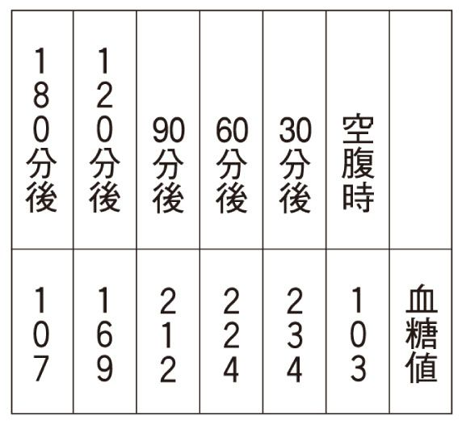
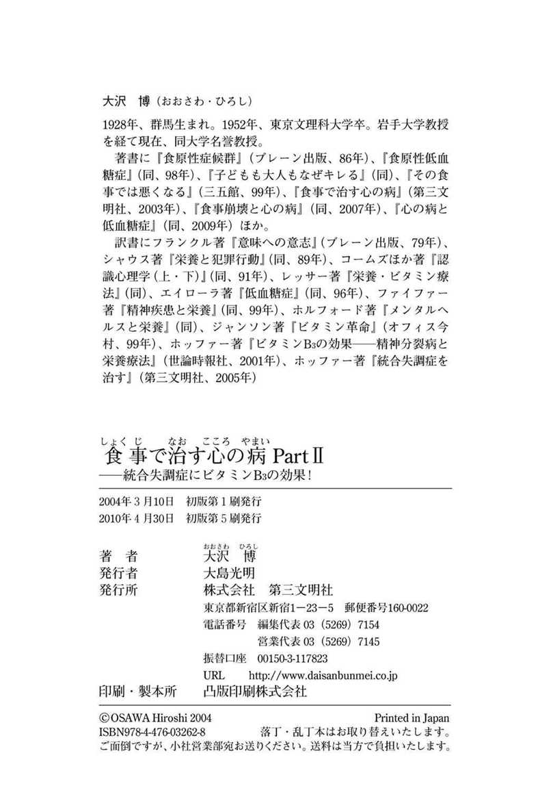

| 食事で治す心の病 Part2 : 統合失調症にビタミンB3の効果！ | |
| 大沢博 | |
| (2004) | |
食事で治す心の病ＰａｒｔⅡ
統合失調症にビタミンB3の効果！
大沢 博
この電子書籍は、縦組みの底本を元に作成しました。
まえがき
前著『食事で治す心の病』が出版されたのが昨年、二〇〇三年の三月だった。その反響は実に大きく、精神疾患の患者をかかえて困りぬいている家族、とくに両親や、患者本人からも、援助を求める相談が殺到した。精神科医や心療内科医からの反応はほとんどなかった。
「病んでいる息子（あるいは娘）の食生活は、この本に書いてあるとおりでした」という親が多い。
ビタミンB3を服用したら、息子はたいへんよくなったのですが、もう大丈夫といって服用しなくなり、やがて再発。また入院しましたが、ビタミン服用を認める病院ではないので困っています、という通信もあった。息子は、またB3をのみたいと言っているという。
援助を求める人たちが取り組んでいる病は、ほとんど統合失調症である。患者の病歴、食歴、現在の症状と食生活などを知らせてくれる方も多いので、私としては、この病を理解するのにたいへん役立っている。
精神科医から「この病気は治りません。一生、薬をのみ続けなければなりません」と言われた親もいる。「統合失調症は不治の病」と思い込んでいるのであろう。
医師に栄養療法のことを話したら、「そういうのはありません」と答えられた人が多い。たしかに精神科医の本には、まったく載っていない。研究する医学者がいなければ「そういうものはない」ということになる。
薬以外の方法で患者がよくなっては困るのだろうか、とさえ思いたくなる精神医学の実情である。
パートⅡのこの本では、統合失調症に焦点をあて、私が入手した情報と、私なりの栄養的アプローチを、述べていきたい。
ここで、統合失調症への私の関心の背景を、披露しておきたい。
「統合失調症」──以前は「精神分裂病」あるいは「分裂病」と呼ばれていた──この精神病に、私がかかわりをもったのは、一九四八年の秋だった。当時、群馬師範学校の学生で、心理学を専攻としていた。
国沢博教授の指導のもとで、前橋郊外にある精神病院を見学させていただいたとき、分裂病の患者の人たちに会うことができた。
それからまもなくの文化祭のとき、心理学専攻としてなにか展示することになったが、その病院から、分裂病患者の描いた絵をお借りしてきて、展示させていただいた。
翌年の一九四九年に、私は東京文理科大学の心理学科に入学した。その二年生のときだったと思うが、非常勤講師の宮城音弥東京工大教授が講義をする、という掲示が出た。東京都内の武蔵野病院という精神病院での臨床講義で、実際に患者に来室してもらっての講義だった。患者が退室した後、教授が、あの患者は分裂病だとか、躁うつ病だとか説明してくれたが、どういう点で見分けているのか、見当がつかなかった。
三年生になると卒論作成が課せられる。分裂病という不思議な病気への関心から、文献を探しているうちに、単純な視知覚のテストを使った報告を見つけたので、追試してみようと思った。そこで患者を被験者として研究させていただくため、三年前に見学した精神病院の院長にお願いし、許していただいた。
その病院で経験したことで、いまでも記憶が生なましいことが二つある。
一つは、もっとも重い女子患者の大部屋の患者たちの風景である。「これが廃人といわれる状態なのか」と思った。みな白い着物を着て、立っている人、座っている人、床を這ってきて私の足をつかもうとする人、まさに、人間らしい生気のない、相互の交流もない、よどんだ状態だった。この病気のおそろしさを痛感したのである。
もう一つは「ロボトミー」といわれる手術の場面である。これは大脳の前頭葉白質を切断する手術で、前頭葉と他の脳部との繊維連絡が部分的に遮断される。この手術がおこなわれると聞いたので、その場面を見たくなった。
許可を得て、その場面を見学させてもらったが、執刀する医師が、手回しのドリルで患者の頭蓋骨に穴をあけはじめ、白い骨粉が散ったのを見て、気分が悪くなり、早々に逃げ出した。
この患者について、担当の医師からショッキングな話を聞いた。手術の二、三日前に母親がやってきて担当の医師に、「手術の最中に息子を死なせてください、お願いします」と頼んだのだという。息子の精神異常のために、家庭が悲惨な状態におちいっていたらしい。
原因不明といわれているこの病気自体のこわさと、さらにそれが家族にも大きな不幸をもたらす、このおそろしさが、私の心から離れなかった。
五〇年たった今、このおそるべき精神疾患、原因不明といわれ、薬を何種類ものまされ、時には医師から「この病気は治りません。一生、薬をのみ続けなさい」と言われる、この疾患の患者や家族たちに、援助の可能性が見えてきた。遅々とした歩みだったが、海外のすぐれた精神医学者たち、また「低血糖症」の研究に理解と協力を与えてくれた、日本の医師たち、そしてわらにもすがる思いで援助を求め、きわめて率直に経過や体験を伝えてくれた方たちのおかげで、私なりの「統合失調症」像が生まれそうな気がする。
この書が、不可解と思われてきたこの疾患の解明、予防、治療に、いささかでも貢献できればと願っている。
なお、本書ではビタミンB3に関する用語が頻繁に使われるので、説明しておきたい。ビタミンB3には二つの型がある。ナイアシンとナイアシンアミドで、後者は紅潮を起こさない型である。それぞれニコチン酸、ニコチン酸アミドともいわれている。
目 次
第一章 「統合失調症」という病
「統合失調症」という病名は新しい。以前は「精神分裂病」あるいは「分裂病」という病名だった。以前の本や論文ではもちろん、古い病名が使われているし、現在でも相談の場などで、「分裂病」が使われることも多い。したがって本書では、両方の語を使うことになる。
精神病のもっとも代表的なものである。『ステッドマン医学大辞典』（メジカルビュー社）によれば、「最もよくみられる型の精神病で、妄想および幻覚のような思考過程の障害が特徴となるほか、他人や外界に対する関心がまったく失われて引きこもり、自閉的となる。分裂病は今日では、単一疾患としてよりも、ひとつの精神症候群として考えられ」ている病である。
この病、とくにその症状については、精神医学の専門書だけでなく、一般向けのいわゆる「家庭医学書」でも、説明されている。本書では、この病にかかった人、また必死になって援助を求めているその家族からの訴えに、なんとか応えていきたい。効果的な援助をめざして書いていきたい。
１ 次つぎに寄せられる、助けを求める通信
私は、二〇〇三年三月に『食事で治す心の病』（第三文明社）という本を世に出した。この本でもっとも重点をおいたのが、統合失調症の栄養療法で、とくにビタミンB3の効果について、先駆的な精神医学者の研究、そしてすでに服用した人たちの経過を挙げておいた。
やがてこの本を読んだ人たちから、次つぎに援助を求める通信が寄せられた。電話相談はむずかしく、かなりの時間をとられるので、お断りをしている。そこで、手紙やＦＡＸで切実な訴えや質問、相談を求めてこられる。
あまりにも多いので、ほんとうに簡単にしか応答できないので、申し訳ないと思う。本をしっかり読んで、自分なりに学習したうえで、質問してくださるようにと返事をすることも多い。
しかし、親たちからの訴えは、この疾患に関心をもつ多くの方に読んでいただきたいと思うので、まずいくつかのお手紙を、紹介させていただく。いうまでもなく、個人情報の部分は除いてある。
不登校、ひきこもり、そして発病
新聞広告で本を見つけ、早速購入し、読ませていただきました。もしかして、娘の病気が治るかもしれないという希望がわいてきて、いてもたってもいられない気持ちで、お手紙させていただきました。
娘は二十五歳です。中二のときに不登校となり、一年間まったく学校に行けませんでした。中三の十一月から受験のためと学校の相談室に行き、通学をはじめましたが、勉強不足・意欲不足のため、けっきょく受験に失敗しました。本人にとって痛手になったと思います。その後、ひきこもりましたが、十九歳のとき明るさをとりもどした時期もありました。
その後、何の進展もなく、最近はだんだんと悪くなってきています。そのころから、よく眠れなかったり、まわりのことがすごく気になったり、妄想があったりで、平成十三年に初めて精神科に行き、薬をのみはじめました。そのときはまだ、統合失調症という診断ではありませんでした。私たち親も、ひきこもりからくる症状と思っていました。
それが十四年秋に、病院をかえたとき、いきなり、「統合失調症のために、いままでいろいろな症状が起こっていたのでしょう」と言われ、大変なショックを受けました。
小食で、おやつは食べ放題の生活
現在の娘の状態は、幻聴、妄想が強く、家にいても不安、恐怖心があり、目もうつろな感じで、食欲もありません。薬をのむために、ごはんを少しだけでもと流しこんでいるような状態です。
娘は幼少時からすごく小食で、同年代の人たちの半分くらいしか食べていなかったと思います。その分、祖母といっしょだったので、おやつは食べ放題に近い生活でした。
家にいても落ち着くことができず、緊張して風呂にもゆっくりと入れません。病院には二、三週間おきに通院しています。「あまりよくなりません」と言うと、いままでの薬を減らすことなく、ちがう薬がふえたりするので、不信感が出てきました。
薬をのんでいるだけで、ほんとうに治るのかという思いがしていましたので、この本に出合ったときには、ほんとうにうれしくなりました。ワラにもすがる思いで、この手紙を書いています。
現在のんでる薬は次のとおりです。
ミラドール （抗精神病薬）
アキネトン （パーキンソン症候群治療剤）
ワイパックス （精神安定剤）
ウブレチド （筋無力症治療剤）
アモバン （催眠鎮静剤）
ジプレキサ （分裂病治療薬）
小食、そして砂糖が多いであろうおやつの大量摂取、その背後には孫を喜ばせたい祖母のまちがった愛情、やがて不登校、ひきこもり、そして発病という経過である。子どものころから、低体温傾向だったという。
投与されている薬のうち、ジプレキサは、薬の本を見れば警告が付記されている。
「(1)著しい血糖の上昇から、糖尿病性ケトアシドーシス、糖尿病性昏睡等の重大な副作用が出現し死亡の可能性、(2)上記副作用があることを患者および家族に十分に説明し、口渇・多飲・多尿・頻尿等の異常が出現したら直ちに投与中断し医師の診察を受けるよう指導する」と。
この方は『食事で治す心の病』を読んで、娘ももしかしたら低血糖症かもしれないと思い、地元の病院で低血糖症かどうかをみられる、糖負荷試験をやってもらおうとした。しかし趣旨を理解してもらうのがむずかしく、やっと３時間の検査をしてもらえた。
結果は次のとおり。

低血糖症について日本でもっとも臨床経験が深い、千葉市のマリヤ・クリニック、柏崎良子院長が使っている、ニューボールド博士の診断基準の③は「６時間のＯＧＴＴ（経口糖負荷試験）の間に、どの時点でも１時間に50㎎以上下降した場合」というものである。
検査の結果では、１２０分後から１８０分後までに、62も下降している。それなのに、検査をした医師は「低血糖ということはない。このまま検査をしても、たぶんまた最初のカーブのようにくり返していくでしょう」と告げたという。
２ 砂糖と牛乳と精神科
ある母親から、「統合失調症」の息子がたどってきた経過の報告をいただいた。この話からも学ぶことがじつに多い。母親の切実な訴えをそのまま紹介していく。
平成十四年三月に電話したときは、息子が命をたつか、私たちもどうなっていたかわからない状態でした。息子は二十六歳です。小さいときからやさしく、けが以外は何も心配をかけたことはありませんでした。
私の両親がそばに住んでいたので、毎日遊びに行ってはチョコレート、ジュース、アイスクリーム、菓子パンなど、甘いものばかり食べていました。両親とも甘党でした。
中学時代はスポーツをしていて、お茶代わりに牛乳を１～２ℓ飲んでいました。卒業のころ、二か月で体重が40㎏もふえました。そのころからおかしくなりはじめた、と言っています。十七歳のころからアトピーにもなりました。
何種類もの精神病薬
二十三歳のときには、近くの川のそばに毎日立っていました。「薬をのんでも眠れない」と言います。通院しましたが、歩けなくなり、私が一人で行きました。病名は「うつ」と言われました。いくら薬をかえても、眠れないと言い、強い睡眠薬を何錠も、安定剤を何種類ものむので、からだはボロボロ、ごはんも食べられないというので、口の中を見ると、舌がでこぼこになっていました。
このころから形相も変わり、以前の息子の姿はありませんでした。入院中の薬は教えてもらえません。別の病院宛の紹介状に書いてあったのが、次のとおりです。
デパス （精神安定剤）
セパゾン （精神安定剤）
ＨＬＰ
ヒルナミン （抗精神薬）
ドグマチール （分裂病治療薬）
トレドミン （セロトニン・ノルアドレナリン再取り込み阻害薬）
パキシル （抗うつ剤）
トリプタノール （抗うつ剤）
ベンタミンＡ・Ｂ
ドラール
インスミン （催眠鎮静剤）
ビタミンをのみはじめるまで、この病院をやめたくてもやめられなかったのです。息子は爆発寸前で、何を話しても怒るのです。「それを止めるのにどれほどの精神力がいることか」と、息子は訴えました。
（著者注──パキシル、トリプタノール、トレドミンにはみな副作用に「激越」というのがある）
友人に紹介してもらった、あるクリニックに行きました。息子を見るなり、「今の病院の薬を見せなさい」と言い、見せると「今の病院にかかっておきなさい」と、息子をばかにしたような顔で見ているのです。このときほど、情けなかったことはありません。息子はますますひどくなりました。
病院や、薬をかえても同じで
また別の友人が、すぐ入院できるところを紹介してくれました。今度入院したら、普通の状態では退院できない、と思っていましたので、前日には息子も私たちも覚悟を決めていました。主人は号泣していました。息子は、自分自身とたたかうと約束してくれました。
でも病院に行ったら、「ベッドがないので家で待ってなさい」と、うす笑いして言ったのです。もう許せない気持ちでいっぱいでした。医者なんて信じられないと思いました。
平成十四年二月、息子から初めて幻聴のことを聞きました。だんだんひどくなると言いました。「ぜんぜん眠れない、人を殺しそうになる」と言うので、精神科に連れて行きました。二週間分の薬をいただきましたが、ぜんぜんきかないし、眠れないので薬をかえても同じでした。やがて動けない、眠れないので入院しました。眠れないというので薬もきつく、どんどんおかしくなっていくのです。
退院後は、薬の副作用で、死にたくて窓からとびおりそうになるので、何かにしがみついてがまんしている、入院は絶対しないと言う。やがて暴言の連続、ほんとうにどうしたらよいか、悩み続けました。
ビタミンをのみはじめて
そんなとき、友人が勧めてくれた『第三文明』の記事を読み、さらにホッファー博士の本（『ビタミンB3の効果──精神分裂病と栄養療法』世論時報社）を読んでみたら、あまりにも息子の状態にあてはまるので、夢のようでした。何回も何回も読みました。
ナイアシンアミド（ビタミンB3の一つの型で、紅潮を起こさない）を手に入れて、みそ汁などに入れてのませました。一日目、少し顔が変わっていました。一週間で、以前の息子の顔になり、明るくなってきました。夢のようでした。
このときに砂糖ぬきと食事療法ができたら、もっと早くよくなっていたのですが、甘いものが大好きでやめられないのと、話せない状態でした。
本を読んでから息子を見ていると、ジュースなど甘いものをとると、すぐに爆発しそうになるのです。そこで、ジュースなど飲む前に、ナイアシンを入れてのませました。少しずつですが、眠れるようになりました。トリプトファンを手に入れ、のませたら、爆発しそうなのが止まるのです。
本人は「自分の気力で治ってきた」と言って、親の話は聞こうとしませんでした。でも平成十五年になって、話を聞けるようになり、いままでのことなど話して聞かせました。その後は自分でのんでいます。食事も砂糖ぬきです。
悪くする食事に気づく
二か月前からまた調子が悪くなり、以前のようになってきました。食事は、しょうゆ味のスパゲッティを、毎日一～二回、ジュース（ニンジン、リンゴ）を四～五杯飲んでいました。スパゲッティの小麦粉がいけなかったのでしょうか。
最近は、食べてはいけないものを食べたときは、わかるみたいで、次には食べません。五月に入って、また元気になってきました。まだ、錯覚、記憶障害などがあります。
昨年の十月に、体調もよくなってきたので、もう一度やりなおすと言って、大学の通信教育に入学しました。
悪戦苦闘といえる、闘病の道であった。ようやく光が見えてきた。
さてこのお二人のケースでの共通点は、幼いころから食事に大きな問題があったことである。前者は、小食でおやつ食べ放題、後者もお菓子いっぱいだった。
長年にわたって、低血糖症が持続したことが、統合失調症発病になんらかの重大な役割をはたしていたのではないか。
実際、「統合失調症」と診断されていた人で、検査の結果、明確に低血糖症がわかったケースもある。
この本では、「統合失調症」という病が、なぜ発生するのか、その探究にあえて挑戦する。患者の親たち、また患者本人が提供してくれる経過報告のなかに、この難病の謎をとくカギがひそんでいると思う。そのカギを見つけるためには、先駆的研究者たちの業績から学ばなければならないのはもちろんである。
第二章 「統合失調症」の治療法──ホッファーの研究
「統合失調症」の治療法の研究者で、私がもっとも注目してきた精神医学者は、カナダの精神医学者、エイブラム・ホッファー博士（一九一七～二〇〇九）である。
前著『食事で治す心の病』でも、ホッファーの治療法研究は重点的に紹介しておいた。今度のこの本は、主題が統合失調症であるので、もっとくわしく紹介しておきたい。
このような治療法研究が、なぜ専門の精神医学者たちに関心をもたれないのか、その理由もとりあげる。
１ ホッファーの初期の研究
ホッファーははじめ、アメリカのミネソタ大学で農生化学を学び、博士号を得た。それから医学の道に進み、とくに精神医学、心身医学に興味をいだいた。はじめは生化学研究者であったことは、その後の研究に大きな利点となった。
一九五〇年、カナダのレジャイナ総合病院の精神医学研修医となった。
ホッファーの研究に大きな影響を与えたのが、イギリスから招かれたハンフリー・オズモンド博士であった。当時、オズモンドはジョン・スマイシーズ博士とともに、統合失調症患者には毒性化合物〝Ｍ〟物質がある、という仮説を立てていた。ホッファーの勧めで、この二人は論文を発表した。
そのタイトルは「分裂病──新しいアプローチ」というものである。私は、岩手大学教育学部の菅原正和教授の協力により、この論文を入手できた。
彼らは統合失調症の研究で、メスカリンに注目した。メスカリンは、サボテンの一種、ウバダマなどに含まれる、アルカロイドという物質で、幻覚作用を起こすものである。ＬＳＤに似た知覚認識の異常などの作用があるが弱い。幻覚作用は主に幻視である。
彼らは、メスカリンで誘発された、正常人の心理的経験と、統合失調症患者の経験を比較した。感覚障害、運動障害、行動障害、思考障害、理解障害、幻覚、分離、離人症、気分障害で、非常に似ていた。
「分離」とは、一連の心の動きが、他のプロセスから離れている状態である。
「離人症」とは、「自分がやっているのに、自分がやっている感じがしない」などの疎隔感、断絶感である。
彼らはまた、メスカリンの化学構造が、アドレナリンに似ていることも認識していた。さらに、ぜんそく患者に使われるアドレナリン溶液の劣化（変色）したものが、同じような心理的経験を起こすことも観察していた。劣化したアドレナリンがどうもあやしい、ということになったのである。
ここで余談だが、ホッファーにいわせると、このカナダのサスカチュワン州には医科大学がなかったからよかったという。もし医科大学があれば、精神分析医になりたい精神医学者たちが、精神医学部門のスタッフになり、統合失調症研究への生化学的アプローチなどは拒否したであろうという。
一九五〇年には、カナダとアメリカでは、すべての精神医学部門で、精神分析が専門というタイプの精神医学者がスタッフになった。一九五四年までは、若い精神科医たちのほとんどが、精神分析医になろうとし、それになれないと残念がったのだという。
アメリカでは、個人精神分析を受けていないと、精神医学の教授になるのはほとんど不可能だった。
さてホッファーは、オズモンドらの仮説が提言していることに注目した。メスカリンのような心理的経験を起こし、化学構造がノルアドレナリンやドーパミンのように、アドレナリンやカテコールアミンと似ている物質を探し求めることにした。
この考えがわいたのは、劣化したピンクのアドレナリンが、人によっては幻覚誘発物質になった、という観察からである。
ホッファーは、幻覚誘発物質に関する情報を集めはじめた。幻覚誘発物質とは、「意識水準の変化なしに、メスカリンタイプの反応を起こす合成物」と定義し、麻酔薬は除いた。幻覚誘発物質のリストは短いもので、次のとおりだった。
ｄ─ＬＳＤ─25、ハルマリン、メスカリン、イボガイン、劣化したアドレナリン。ホッファーが驚き、興奮したのは、これらがみなインドールか、インドールになりうるものだったことだ。
インドールというのは、タンパク質の腐敗によって生じ、コールタール中にも含まれる物質で、不快な臭気をもつが、希薄なときには芳香を放つ。
劣化した、ピンクのアドレナリンが何であるかは、まだ知らなかった。
ここで、アドレナリンに関係があり、幻覚誘発物質になるインドールを探すことになった。それがわかったのは一九五二年で、サスカチュワン分裂病研究委員会での、ハチェオン教授の話からだった。
ハチェオンは、アドレノクロムでＰｈＤ（博士号）を得ていた。アドレノクロムは、アドレナリンの酸化によって生成される。それはサイドの鎖を六つのリングと融合させてインドールを生成する。
ホッファーらが求めていた、かくれた統合失調症毒素は、「アドレノクロム」であった。これが、アドレナリンの酸化により生成されるインドールである。
カテコールアミン（カテコール核をもつ生体アミンの三種、ドーパミン、ノルアドレナリン、アドレナリンの総称）は、容易にそれぞれのインドールになる。ドーパミンはドーパクロムに、ノルアドレナリンはノルアドレノクロムに、アドレナリンはアドレノクロムになる。
一九五二年には、これらの反応については、ほとんどわかっていなかった。わかっていたのは、副腎皮質が切り開かれると、空気に触れて赤くなり、抗酸化物で守られていないアドレナリンがピンク色になり、それから赤くなり、やがて褐色に、最後に黒くなる、ということだった。
ホッファーは、ここで二つの化学反応式を提示する。
１ ノルアドレナリン → アドレナリン
２ アドレナリン → アドレノクロム
化学式１は、メチル群を必要とする。ノルアドレナリンはメチル受容体で、メチル供給体からメチル群を拾いあげて、アドレナリンになる。
ノルアドレナリンは、アミノ酸のチロシンからドーパミンを経て、生合成される。
この二つの化学反応式から、アドレナリンが酸化したアドレノクロムが、幻覚などの統合失調症症状の発生にかかわるものであれば、アドレノクロムのもとになる、アドレナリンの分泌を抑制することだと、ホッファーは考えた。
それには次の二つの道がある。
① ノルアドレナリンにメチル群が加わるのを防げれば、アドレノクロムの生成に使えるアドレナリンの分泌を抑制できる。
② アドレナリンのアドレノクロム化を抑制し、他の合成物にする。
ホッファーは、ミネソタ大学でビタミンについて研究したことがあり、ナイアシン（ビタミンB3）が自然なメチル受容体であることを知っていた。
現在では、自然なメチル受容体は、ほかに、チアミン（ビタミンB1）、リボフラビン（ビタミンB2）、それにユビキノン（補酵素Ｑ10、コエンザイムＱ10）があることがわかっている。
もし、①の道が真であり、統合失調症症状を抑制できるとすれば、これらの栄養素にも注目し、サプリメントをとることが助けになるかもしれない。
しかし当時は、メチル受容体はほとんど知られていなかった。コエンザイムＱ10はまだ知られていなかったし、ビタミンB1とB2は、B3ほどには精神疾患と関連づけられていなかった。B3の欠乏が、ペラグラという精神疾患を招くことだけが知られていた。
ビタミンB3の二つの型、ナイアシンとナイアシンアミドは、両方ともメチル群を拾いあげるメチル受容体である。ホッファーらは、このビタミンが、ノルアドレナリンを利用できなくすることで、アドレナリンの生成を減少させると考えた。
またビタミンB3は、脳のなかのアドレノクロムの生成を減少させる。それはこういうことである。
アドレナリンが酸化してアドレノクロムになるには、二つのステップがある。
第一のステップでは、アドレナリンが電子を一つ失って、酸化アドレナリンと呼ばれるものを生成する。しかし、ＮＡＤ（ニコチンアミドアデニンジヌクレオチド）とＮＡＤＨ（ＮＡＤの還元型）が存在しているときには、酸化アドレナリンは、ふたたび電子一つをつかまえて、もう一度アドレナリンになる。このような電子のやりとりをくり返している。
したがって、ＮＡＤとＮＡＤＨが不足すると、酸化したアドレナリンは、さらに酸化してアドレノクロムになってしまう。
この状態からは、アドレナリンにもどることはできない。つまり、ＮＡＤの前駆体の一つであるビタミンB3がないと、アドレノクロムがふえてしまうのである。
これと同じことが、ほかのカテコールアミンでも起こる。ノルアドレナリンはノルアドレノクロムに変化し、ドーパミンはドーパクロムに変化するのである。
そこで、アドレナリンが酸化してアドレノクロムになるのを抑制すれば、アドレナリンは本来の生理的目的、すなわち危機におちいったときに、緊急にエネルギーを増大させるのに使われるのである。
ホッファーは、パーキンソン病にも言及している。
パーキンソン病は、Ｌドーパの欠乏によって起こる、といわれている。そのことが、患者にＬドーパ剤を投与する根拠になっている。しかし、多くの医師が勘定に入れていなかったことは、いったんＬドーパ剤を投与したら、その後どんな変化が起こるか、ということだった。
ホッファーは、それがドーパクロムに変化し、次の二つの作用をするという。
① 脳のなかにＬドーパを増加させる。これは患者の症状の一部を弱めることはできる。
② ドーパクロムの量を増加させ、精神病的状態をつくりだす。
医学者によっては、「死を急がせる」という人もいる。
Ｌドーパ剤は、一時的には有効であっても、結局は寿命を短くするというわけである。
しかし最近は、ビタミンB3とコエンザイムＱ10が、ドーパミンを節約する作用があるという報告もされている。この報告をしたシュルツらは、実験的にドーパミンの枯渇を防ぐことができることを、確認したという。
ホッファーは、二人のパーキンソン病患者に、これら二つの栄養素を与えたところ、非常に有効だったと報告している。
２ ホッファーらのパイロット・スタディ
ホッファーとオズモンドは、統合失調症の臨床実験を始めるのに、まずそのガイドラインを定めた。
① 使用する化学的物質は、大量に用いても安全でなければならない。
② 最適量でなければならない。
③ 長期間にわたって、経口投与しなければならない。
なぜなら統合失調症は、虫垂炎や肺炎のようなものではなく、糖尿病に匹敵する根治の困難な病気だからである。
これらの条件に沿っておこなった探究で、すぐに結果がでたのは、水溶性ビタミンだけが必要条件に合う、ということだった。そこでビタミンB3とビタミンＣを、検討に値するものとしたのである。
一方、ナイアシン研究者だったカウフマンは、関節炎患者に、ナイアシンアミドを一日４ｇまで投与していたが、ホッファーらは、もっと少ない量でも、統合失調症に有効だろうと考えていた。
一九三〇年代の精神病院のペラグラ専門医たちは、ナイアシンアミドの効果を観察していたはずである。しかし「一つの疾患は一つの欠乏から」という観念にとりつかれていた彼らは、B3でよくなる患者はペラグラと診断し、回復しない患者には、「統合失調症」というラベルを貼った、とホッファーはいう。
数少ないが、うつの患者にビタミンB3を試み、有効だったという学者がいた。うつを伴っている患者は、ある率で、やがて統合失調症になることを知っていたので、こうした反応をする人たちというのは、統合失調症のはじまりかもしれないと仮定した。当時のホッファーたちは、統合失調症でない人たちにも、ビタミンが価値あるとは考えていなかった。
ホッファーは、メルクという製薬会社に、ナイアシン、ナイアシンアミド、リボフラビン、チアミン、アスコルビン酸（ビタミンＣ）の供給を依頼した。
数週間で、各ビタミンの50ポンド缶を受け取った。それらを病院の薬局に転送し、５００㎎のカプセルをつくってもらった。
一九五二年のオズモンド報告──六人の患者にビタミンB3を与えた結果
サスカチュワン分裂病研究委員会の第二回ミーティングは、一九五二年六月に開かれている。ここでオズモンドから、六人の患者にニコチン酸（ナイアシン＝ビタミンB3）を与えた結果が報告された。
①Ｐ・Ｂ（五十歳、男性）
精神科医は、アルツハイマー型痴呆か、カタトニー分裂病のどちらかと考えた。以前は暴力的になることがあったが、この病棟に来て数日は、静かで受動的、しかし「毒を盛られていて殺される」という妄想を表現した。ナイアシンアミドが一日１ｇ投与された。四日たったらよい状態になり、六週間たってもよい状態のままなので、そこで退院した。
②Ｄ・Ｃ（二十二歳、男性）
非常に悪い暴力的精神病で入院させられ、インスリン昏睡療法が実施されたが症状が悪くなり、ついには拘束具を使われるようになってしまった。昏睡状態におちいった。胃にチューブでナイアシン５ｇとアスコルビン酸５ｇを注入した。その夜、昏睡から脱した。同じ量を毎日投与したら、二週間後、彼はよくなった。四週間後、家族が家に連れて帰った。
③Ａ・Ｌ（五十歳、女性）
統合失調症と躁うつ病、両方の特徴を示していて、何回も入院した。ひどいパラノイドで、ラジオが自分のことを放送しているなどと、信じこんでいた。自分を守るということで、温度調節装置をひきちぎり、そのパイプにつめものをしようとした。看護が極度に困難になったが、一日当たりナイアシン５ｇとアスコルビン酸５ｇを投与したら、数週間後にはもはや看護困難ではなくなった。このビタミンをとるのをやめると再発したが、まだ以前よりはよかった。
ホッファーは二人のケースを報告した。長いので、そのうちの一人についてだけ紹介する。
①Ｆ（三十九歳、男性）
この男性は三か月病んでいた。陸軍の復員軍人で、戦争でも幸い生き残ったが、カナダ陸軍が自分に対して企んでいるとか、近所の人も自分に対して企んでいる、と信じこむようになった。
一日当たり１ｇのナイアシンを投与しはじめたら、一〇日後に病院から出られた。ところが家で彼は両親に、「近所の人たちの企みを調べるために帰ってきた」と話した。彼は病院に連れもどされ、ナイアシンが一日当たり２ｇまでふやされた。数週間後、十分に回復して退院できた。数か月たったが正常である。追跡調査しても、彼の農場の経済的問題が非常にむずかしいにもかかわらず、その後よい状態が続いている。
３ B3の効果についての統制研究へ
次の二年間にわたって、二九人の統合失調症患者に、一日当たり３ｇのナイアシンが投与された。彼らのほとんどに幻覚と妄想があった。担当医が診断していたが、その医師たちは必要に応じて電気けいれん法を用いた。その医師が同意し、ホッファーがその診断を認めたら、このビタミンが与えられた。一九五四年の終わりに評価された。電気けいれん法を受けようと受けまいと、二九人の90％以上が改善された。
患者にも医師にもわからないようにして投与する「二重盲検」研究
サスカチュワン分裂病研究委員会の第二回ミーティングでは、ビタミンB3の治療力を検証するには、統制研究が必要だということになった。ホッファーらは、「二重盲検」という研究方法を知って、計画を立てた。
二重盲検というのは、効果を確かめる薬か偽薬か、患者にも医師にもわからないようにして投与する、という実験計画である。
患者たちには、入院順に１から30までの番号がつけられた。担当医は、心理療法か電気けいれん法、あるいは両方を用いることができたが、インスリン昏睡法は許されなかった。治療法は三つ、プラセボ（偽薬）、ナイアシン、ナイアシンアミドである。
ナイアシンは紅潮を起こすことがあるので、紅潮が起きないナイアシンアミドも使われたのである。臨床スタッフには、「ナイアシンとプラセボしか用いていない」と伝えられた。
結果は、よくなったのがプラセボ群九人のうち三人、ナイアシン群一〇人のうち八人、ナイアシンアミド群十一人のうち九人だった。
一九五一年から五四年の臨床研究
二重盲検研究では、出せる答えは、ある物質がプラセボよりも効果があるか、ということだけである。しかし副作用、毒性、必要な治療期間、最適投与量、回復に伴う量の変化、維持量などについては、何の情報も得られない。
そこでホッファーは、一九五一年から一九五四年の間に、ビタミンB3を投与された統合失調症患者のすべてを、同時期にプラセボ、電気けいれん法、インスリン昏睡、心理療法で治療された他の統合失調症患者すべてと比較した。
自殺者数（人） よくなった（％）
１群 入院中も退院後もB3を受けた人たち ０ 78
２群 退院後にB3を受けた人たち ０ 80
３群 入院中にB3を受けた人たち ０ 81
４群 B3をまったく受けなかった人たち ４ 60
１、２、３のビタミン群と４群の患者一人当たり入院日数は、２３４と３１９で、ビタミン群のほうが少なかった。
これらの研究のほか、ホッファーらは「プロジェクト１２０」と名付けた研究や、追跡研究、慢性患者の研究など、統合失調症の治療をめざして数かずの研究をおこなった。
詳細を知りたい方は、ホッファー著・大沢博訳『ビタミンB3の効果──精神分裂病と栄養療法』（世論時報社）をお読みいただきたい。
七年をすぎたころ、慢性患者も回復しはじめた
ここでは慢性患者についてのホッファーの記述を、紹介しておきたい。
慢性患者は、急性患者のようにはよく反応しなかった。しかし、治療期間七年をすぎたころ、ホッファーが気づいて驚いたのは、慢性患者が回復しはじめたことだった。
一年までの短期間では、慢性患者はビタミンB3を与えられても、反応しなかった。これはホッファーを困らせてきたのだが、ホッファーは、症候群という概念を受け入れてから、その意味がわかりはじめた。
ビタミンB3がもっとも有効なのは、ビタミン依存から統合失調症が起きた患者だった。乳製品や小麦など、単一あるいは複数の食物アレルギーにかかっていることが主原因の患者は、なかなか反応しなかった。脳アレルギー症候群は、これらの食物の慢性使用に対する、統合失調症的反応である。
ビタミンB3は、抗アレルギー性ももっている。ナイアシンはヒスタミン値を低下させるが、それの貯蔵所の濃度を顕著に下げるからである。
ホッファーは、統合失調症患者を四、五日絶食させて調べた。もしアレルギーが存在していれば、絶食の終わりころにはずっとよくなる。次には、食品を個別的に与え、反応を観察する。再発を起こした食品は、その後の食事から除かせるのである。
統合失調症症候群には、脳アレルギー以外の問題もありうる。統合失調症患者の尿に検出されることの多い、ピロールの問題である。
これは、アメリカの精神医学者ファイファーも研究したので、あとでファイファーの研究を紹介するとき、関連して紹介したい。
第三章 ポーリングと米国精神医学会の論争
１ 論文「五人のカリフォルニアの分裂病患者」をめぐって
ホッファーは一九六七年、『分裂病ジャーナル』という学術誌に、「五人のカリフォルニアの分裂病患者」という小論文を発表した。
この患者たちには四つの共通点があった。カリフォルニアから来た、標準的な治療法には反応しなかった、ホッファーが治療した、大きく改善した、ということである。四人は正常になり、一人はかなりよくなった。
ホッファーは、この論文のタイトルがアメリカの精神医学者たちの関心をよび、自分たちの患者に追試してみることを望んでいた。しかし、この論文がもたらした結果は、まったく驚くべきことだった。
ホッファーは「私たちの研究を反復実験しようとする試みは何もなく、アメリカの精神医学者たちは、私たちにビタミンB3の報告をこれ以上発表させないよう、本気になって取り組むようになった」と述べている。
米国精神医学会の『対策委員会報告７』
米国精神医学会（ＡＰＡ）は一九七三年、『対策委員会７ 精神医学におけるビタミンと分子整合療法についての報告』を作成し、公刊した。ホッファーらの研究に対する、きわめて否定的な結論である。
この経過については、『ビタミンB3の効果』で詳しく述べられている。ここでは、ホッファーの盟友、ライナス・ポーリング博士が、反論を展開した論文「心の分子的環境について──分子整合理論」（『米国精神医学ジャーナル』、一九七四）を、紹介しておきたい。
ポーリング博士は、一九五四年にノーベル化学賞、一九六二年にノーベル平和賞を受賞した、アメリカの物理化学者である。
日本の精神医学者は、ＡＰＡの『対策委員会報告７』の結論は知っていても、その結論の根拠、ホッファーの研究内容、そしてポーリングが反論したことなどは、おそらく、ぜんぜんご存じないのではないか。
ポーリングはまず、統合失調症の分子整合療法を説明している。「分子整合精神医学」は、ポーリングの造語で、ホッファーらの立場の精神医学も含まれる。
以下、ポーリングの論である。
この療法は、ビタミンとミネラルの使用、食事、とくに砂糖の制限、そして初期の急性期には、フェノチアジン（クロルプロマジンなど抗精神病薬合成の原料化合物）のような危機管理の通常療法を含む、としている。この薬は、人体に自然に存在するものではなく、分子整合ではない。副作用は望ましくないが、危機をコントロールするのには価値がある。
ホーキンスは、統合失調症治療のための初期のビタミンの組み合わせを次のように述べた。
アスコルビン酸（ビタミンＣ） １ｇ
ナイアシンアミド（ビタミンB3） １ｇ
ピリドキシン（ビタミンB6） 50㎎
ビタミンＥ ４００ＩＵ
これらを一日四回。他のビタミンも与えてよい。とくにビタミンB3が大量に処方されるが、初期段階の後の通常量は、一日約８ｇと思われる。
ビタミンＣの効果を知っていたポーリング
ホウイットらは、通常量のビタミンＣをとっている統合失調症患者は、健康人と比べて、血中ビタミンＣの濃度が低い、と報告した。
統合失調症その他の疾患の患者のビタミンＣの摂取をふやすことには、特別の理由がある。壊血病の発生を防ぐためには、一日約60㎎の摂取で十分とされている。しかし実際は、ほとんどの人の最適摂取量は、それの一〇ないし一〇〇倍という。
ストーンなどの本では、統合失調症の分子整合療法でのビタミンＣ摂取は、一日約４ｇを提唱している。
ミルナーは、四〇人の慢性男性患者で二重盲検研究をおこなった。三四人が統合失調症、四人が躁うつ病、二人が進行麻痺だった。各群に一日約４ｇのビタミンＣを投与した。その結果、ビタミンＣの大量投与が有効であることがわかった。
ポーリング自身は、統合失調症患者一〇六人について調べたが、八一人がビタミンＣ欠乏だった。
こうした研究からポーリングは、統合失調症患者がビタミンＣの摂取を増加させることで、効果が出ると信じたので、ＡＰＡの『対策委員会報告７』への反論を書いた。
ビタミンB3の効果
ナイアシン（ビタミンB3）の欠乏で起こる精神疾患、ペラグラは、一日に20㎎という少量のナイアシンで防げる。一九三九年にクレックレーらは、重い精神医学的症状をもつ十九人への、ナイアシン投与による治療に成功した。
一九四一年には、サイデンストリッカーとクレックレーは、ナイアシンで同じように二九人の患者の治療に成功した。
この二つの研究では、かなり大量のナイアシンが使われた。一日に０・３ないし１・５ｇが与えられた。投与された患者のだれもが、その後ペラグラや他のビタミン欠乏症による身体症状が出なかった。
その後一〇年ほど経て、ホッファーとオズモンドが、統合失調症治療において、ナイアシンあるいはナイアシンアミドの二重盲検研究をおこなった。
一九六四年に彼らは、一〇年の追跡研究で、ナイアシン群の75％は入院を必要としなかったが、比較群ではそれが36％だったと報告した。
ホーキンスも同じような結果を示した。しかし他の研究者による、それと矛盾する意見がある。その証拠の重さについては後で論ずる。
ビタミンB6の効果
ピリドキシン（ビタミンB6）は、多くの分子整合精神医学者が統合失調症患者に一日当たり２００ないし８００㎎用いている。このビタミンによって合成される物質は五〇以上の酵素の補酵素である。ピリドキシンは、トリプトファン・ナイアシン代謝にかかわる。
アナンスらは、ピリドキシンとナイアシンの二重盲検研究をおこなった。被験者は、三〇人の統合失調症患者で、男女十五人ずつ。平均年齢は四十一・七歳、平均入院期間は
一〇・九年だった。
① 組み合わせ群──四八週間、ニコチン酸（ナイアシン）を一日３ｇと、四週間にピリドキシン一日75㎎の投与を三回くり返す。
② ニコチン酸群──四八週間、ニコチン酸一日３ｇと、ピリドキシンのプラセボ（偽薬）。
③ 四週間にピリドキシン一日75㎎と、ニコチン酸のプラセボを、三回くり返す。
②群では七人が改善、三人が悪化、①と③の群では、九人が改善、一人が悪化した。この実験では、ビタミンB3だけよりも、B6、あるいはB6とB3の組み合わせのほうがよい、ということになる。
ビタミンB12の効果
シアノコバラミン（B12）についても、ポーリングは論じている。
その論証としたのは、エドウィンらの研究である。エドウィンらは、精神病院入院中の三十歳以上の患者の血中のビタミンB12を調べた。15・４％が正常値以下で、病理学的に低い濃度であり、その率は一般の人たちの三〇倍だった。
２ 『対策委員会報告７』へのポーリングの反論
ポーリングは、米国精神医学会の『対策委員会報告７』（以下『報告７』と略す）に対する反論を展開した。『報告７』は、分子整合精神医学の基本的な考えをまったく否定する内容となっている。
報告では、分子整合精神医学者の治療プログラムについて、「患者は六種類ものビタミン剤を大量にのまされたうえ、さらに向精神薬とホルモン剤も投与されるかもしれない」としている。
対策委員会がいいたいのは、精神的健康のために必要なビタミン摂取量は、通常の平均一日当たりの栄養所要量と同じ、ということである。この基準に照らせば、「統合失調症の患者は、十代あるいは成人初期にこの病気が発生するまで、成長と発達のために必要なビタミンは適正に摂取している」ということになる。
はたしてそうだろうか。
ニコチン酸（B3）の二つの機能について
B3療法について『報告７』は、次のように論じている。
「ビタミンB3療法について、メガビタミン擁護者が挙げる二つの理論的基礎は、実際には両立しない。
なぜなら、ニコチン酸アミドは、ビタミンとして作用するときには、他の補酵素と結びつけられていて、メチル群を受け入れることはできない。したがって、B3のビタミンとしての働きと、メチル受容体としての働きは両立しない」
ここで、メチル受容体について、若干の説明が必要であろう。
ホッファーは、アドレナリンが幻覚物質アドレノクロムに変化することに注目、これを防ぐためには、ノルアドレナリンがメチル群と結合してアドレナリンになるのを防げばよいと考えた。そのためにナイアシン（ニコチン酸アミド）をメチル受容体として使って、メチル群を結合させてしまえばよい、と考えたのである。
『報告７』は、ホッファーのこの理論を、「両立しない」として否定したのである。
しかし、ポーリングは次のように反論した。「ニコチン酸アミドを大量にとれば、一部の分子はビタミンとして働き、他の分子は別の働きをするので、二つの機能は両立する」と。
アスコルビン酸について
『報告７』はさらに、分子整合精神医学者がアスコルビン酸（ビタミンＣ）を、一日に１ないし30ｇと大量に使うことに疑問をなげかけている。しかしこの報告は、アスコルビン酸の作用に関する重要な研究にはふれていないし、多くの統合失調症患者の血中アスコルビン酸値が低いことを報告している多くの文献にも言及していない。
ポーリングの一九六八年の論文で示された、分子整合精神医学の一般理論を検討することもしていないし、アスコルビン酸の特殊な議論もなされていない。アスコルビン酸には、壊血病を防ぐ以外に多くの作用がある。
ビタミン大量使用の価値をめぐって
ナイアシンの大量使用について『報告７』は、「価値がないことが証明された」と断定した。ところがその根拠となったのは、統合失調症の通常療法をおこないながらナイアシンを投与した実験である。
ポーリングは誤った実験、すなわちナイアシンのみの投与ではない実験から導きだされた、その結論の正当性を疑問視する。
ナイアシンあるいはナイアシンアミドが効果があることは、三つの二重盲検研究（二つはホッファーとオズモンド、一つはデンソンによる）、それに十二の臨床研究で立証されている。
一方、『報告７』は七つの二重盲検研究をとりあげているが、それらの結果はナイアシンアミドを使用した患者と、統制群の間に有意差は見られなかった。
これについてポーリングは、ある治療法とプラセボ（偽薬）が同じ価値があったからといって、その治療法に価値がない、という証明にはならないと反論する。
『報告７』は「グリーンバウムは、体重50ポンド当たり１ｇのニコチン酸アミドか、プラセボを六か月間与えられた、五七人の統合失調症児についての二重盲検研究を報告しているが、この二つの群には統計的に有意差はなかった」ということを、否定の根拠にしている。
これについてポーリングは、次のように反論している。
たしかに、統計的に有意差はなかったが、グリーンバウムの研究では、患者の改善の基準は、観察可能な行動の範囲での臨床スコアであった。この基準では、ナイアシンアミドを投与した十七人の子どもの平均改善スコアは４・０単位、プラセボ投与の二四人は２・６単位だった。つまりナイアシンアミド群の改善効果は、プラセボ群より54％高かった。だが人数が少ないために、95％水準での統計的有意差はみとめられなかった。しかしこの研究は、ナイアシンアミドが無効であることを証明したものではない。むしろその有効性を明らかにしたものである、と。
「統制実験」は二〇年前にすませていた
『報告７』はまた、「分子整合精神医学者らは、過去一〇年以上も統制実験をおこなわず、科学的な新しい実験報告を出していないので、メガビタミン療法の信頼性はいっそう低くなった」と批判した。
ポーリングは反論した。
「私は、分子整合精神医学者と話し合ってわかった。
彼らは、統制された臨床テストをおこなうことは、医療倫理に反すると考えていた。患者の半分には、通常療法に分子整合療法を加え、他の半分には通常療法だけを受けさせるのが、統制された臨床テストである。
すべての患者に、最大の価値があろうと判断された療法をおこなうのが医師の義務である。
ホッファー、オズモンドなどの医師たちは、二〇年前に統制実験をおこなった。その結果、通常療法と並行しての分子整合療法が、ほとんどすべての患者にとって有益である、と確信した。そのときから彼らは、医療倫理上、この療法を患者に提供すること、患者の半分にそれを控えるようなことはしない、ということにした。
対策委員会が、分子整合精神医学者はこの数年、統制実験をしていないと批判するのはまちがいである。」
『対策委員会報告７』に見られる偏見
『報告７』は、「統制実験で有意差がでない状況で、分子整合療法の推進者たちは、ラジオ、素人出版、大衆書で、〝メガビタミン療法〟とか、〝分子整合療法〟というような、まさに誤称であるキャッチフレーズを使って、その療法を広めようとしている。このような大衆宣伝はなげかわしいと考える」とまとめている。
ポーリングは反論する。少し長いが引用する。
「この文章は、報告書全体にみられる、対策委員会のおそらく無意識と思われる偏見を物語っている。『広める』というのも、『キャッチフレーズ』も軽蔑的表現である。
私は、メガビタミン療法と分子整合療法が、なぜ誤称と呼ばれなければならないのかわからない。この結論文は、ほかのところもそうであるが、読者に対して正しくない、非好意的な影響を与えるために書かれたと、私には思われる。
分子整合精神医学は、心のための適正な分子環境、とくに、ビタミンのような人体に正常に存在する物質の、最適濃度の供給で、よいメンタルヘルスを達成し維持することである。
アスコルビン酸、ナイアシン、ピリドキシン、それにシアノコバラミンなどのビタミンの摂取をふやすのが、統合失調症を治療するのに有用であり、この治療法はしっかりした理論的基礎をもっている。
この米国精神医学会対策委員会報告『精神医学におけるビタミンと分子整合療法』は、ビタミンを非常に限定して（ナイアシンだけ）論じ、その理論の一つか二つの側面だけしかとりあげていない。その論述は部分的に誤りであり、その結論は正しくない。」
「栄養」を問題にしない日本の精神医学界の不幸
日本の精神医学書で、分子整合療法はもちろんのこと、栄養療法に言及しているのを、私は見たことがない。
めずらしくアドレノクロム説にふれているものがあった。西村健ほか『臨床精神医学』（南山堂、一九九六）である。「アドレノクロム説は否定された」とある。しかし、アドレノクロム説とはどんな説か、だれが、どんな根拠にもとづいて否定したのかには、言及していない。
「心と栄養」についての見解を表明している、ある精神医学者のホームページでは、文献リストに『米国精神医学会対策委員会報告７』があったが、ホッファーやポーリングの文献は一つも挙げられていなかった。
いまのところ、日本の精神医学は栄養を問題にしないし、また栄養学も、臨床栄養学ですら、精神疾患を研究していない。
精神疾患と栄養の関係の研究が、空白になっているのは、大きな不幸といわざるをえない。
第四章 アドレノクロム仮説と精神医学
前章の末尾で、「アドレノクロム説は否定された」という日本の精神医学書の記述を紹介したが、ホッファーとオズモンドは、一九九〇年に「アドレノクロム仮説と精神医学」という論文を、ホッファーが編集長である国際雑誌『分子整合医学ジャーナル』に載せている。
この章では、ホッファー自身が論ずるアドレノクロム仮説について、理解を深めていきたい。
１ アドレナリンの酸化したアドレノクロムが焦点
一九五二年の段階では、こうした合成物で研究されたのは、ほんの少しだった。資金の関係で、アドレナリンが酸化し、変色した物質、アドレノクロム一つに研究を限定せざるをえなかった。
アドレノクロムは、前駆アミンの酸化で派生したアミノクロムの一つである。Ｌドーパは酸化してドーパクロムになり、ノルアドレナリンはノルアドレノクロムに、アドレナリンはアドレノクロムになる。それらはフリーラジカルによって形成され、それから急速に分解して、アドレノルチンなどになる。アドレノルチンは色が黄色で、アドレノクロムのように毒性があり、精神異常発生物質である。
ホッファーらは、アドレノクロムとアドレノルチンが幻覚物質であることを示す、多くの臨床研究を発表した。
ビタミンがトランキライザーと同じ効果をもつ
統合失調症のドーパミン仮説は広く知られ、受け入れられている。それは「過剰か過少か」という単純な考え、すなわち統合失調症ではドーパミンが過剰かもしれない、あるいは過少かもしれない、という考えなのだが、それを支持する主なものは、トランキライザーがドーパミン・レセプターをブロックするという発見によってである。
アスコルビン酸もドーパミン・レセプターをブロックするが、その発見は無視されてきた。ビタミンが、トランキライザーではないのに、それと同じ効果をもつことが、困惑させるのである。
ホッファーは一九八二年に次のように結論した。
「アドレノクロム仮説は、他のどんな競合する仮説よりも、統合失調症症候群をもっと正確に説明する。二つの主要仮説はむだである。それらはアドレノクロム仮説、もっと正確にいえば、アミノクロム仮説によって調和するからである。」
アドレノクロムは体内でつくられるか？
一九五二年のころ、アドレノクロムについてわかっていたのは、アドレナリンの酸化によって容易に形成され、溶液で赤い合成物になるということだった。これが幻覚発生物質かもしれないと疑った。既知の幻覚物質と似ていたからである。
アドレノクロムは、脳機能をさまたげ、統合失調症形成の本質的段階をつくりだす。
この仮説を検証するには、(1)アドレノクロムは体内でつくられるか、それはどこで、どのくらい、どんな酵素によってか。(2)アドレノクロムは幻覚物質か、もしそうならば、どのように。(3)アドレノクロムの形成の逆転あるいは予防が、統合失調症の治療になるか。──この三つの領域のデータを必要とした。
アドレナリンが、試験管の溶液でピンクに変わるのが発見されたことは、体内でも起こる可能性があると思わせた。生体内でアドレナリンが酸化して、アドレノクロムになる条件は、すべて存在している。
理想的には、アドレノクロムの結晶が体から抽出されたとき、最終的に証明されたということになろう。しかし、これは体内では非常に反応しやすいので、まず他の分子と結合させ、安定させなければならない。アドレノクロムセミカルバジドは、安定した派生物である。アドレノルチンも派生物である。
ホッファーとケニヨンは、血液の中でのアドレナリンからつくられた合成物が、アドレノルチンであることを示した。リーチらは、統合失調症患者の血液では、健常者の血液と比べて、変換率が大きいことを発見した。
一九八〇年代に入って、心臓病学の研究が、アドレナリンが容易に酸化して、アドレノクロムになることを示した。アドレノクロムは心筋組織に毒であり、細動とストレス下の突然死の原因になるかもしれない。
神経学的研究は、Ｌ─ドーパの酸化派生物であるドーパクロムが、脳の退化的変化のあるものの原因であることを示した。ドーパクロムは、アドレノクロムと似ていて、精神病的症状を発生させる危険性がある。
三つのアミノクロムだけが、幻覚に関して検証されてきた。アドレノクロム、アドレノルチン、ロイコアドレノクロムである。初めの二つが幻覚物質で、三番目はそうではない。それは反対に、非常に緊張している人が、舌下で与えられると、五分か一〇分で抗不安効果が現れる。
アドレノクロムが誘発する反応と、アドレノルチンが誘発する反応は、いくらか異なる。後者が起こす変化は繊細で、幻覚は少ない、アドレノクロムは知覚変化をもっと起こし、まれには、ＬＳＤやメスカリンが起こしたものと同じくらい、はっきりすることがある。その効果は長く続く可能性がある。ホッファーは二週間のパラノイドうつを起こしたし、同僚の一人は一週間の幻想を伴うパラノイドうつ反応を起こした。
ビタミンB3が有効であるという証拠
ホッファーらは、安全で一生涯とることができ、副作用がない合成物を求めた。
そこで、ノルアドレナリンからメチル群をひき出すことで、アドレナリンの形成を減らそうと望んだ。またアドレノクロムが呼吸酵素阻害因子であること、呼吸酵素は体内で、チアミン（ビタミンB1）、リボフラビン（ビタミンB2）、ビタミンB3でつくられることを知っていた。呼吸酵素の量を増加させることが、その阻害を克服する一つの方法である。これらの要件全部、すなわちビタミン、水溶性、安全、メチル受容体であるのが、ビタミンB3であった。
ビタミンB3は、ペラグラ・ビタミンであることが知られていた。ビタミンB3欠乏がペラグラを起こすのである。ペラグラの初期の段階では、統合失調症と区別しにくい。
また、アドレナリンが酸化してアドレノクロムになるのを減らすための還元物質で、基準に合うのがアスコルビン酸（ビタミンＣ）だった。しかし二重盲検研究では、二つの合成物をテストすることはできない。ビタミンB3しか、使用できなかったのは、こういう理由である。
一九五二年に、５００㎎の錠剤を必要としたが、手に入る最大の錠剤は１００㎎であった。一日当たり３ｇをこの錠剤で与えると三〇錠で、賦形剤で悪くなるおそれがあった。実際、約二〇年後だが、南カリフォルニアのある精神病院は、ホッファーらの研究を追試しようとしたが、その薬局は１００㎎剤しか供給しなかった。患者のほとんどが吐き気と嘔吐を起こし、その研究は破滅した。ナイアシンのせいにしたらしい。
ホッファーらは、純粋なビタミンB3結晶を大量に入手して、カプセルに入れて使用した。数年後、オレゴンのカークマン・ラボラトリーズという製薬会社が、初めて５００㎎剤を用意してくれた。
ビタミンB3で治療された統合失調症患者たちが、非常によい予後を示すことを証明する、多くの研究をおこなった。ビタミンB3が有効であるという証拠は、分子整合医学の文献で大量に入手できる。
初期の四回の二重盲検研究からの結論は、次のとおりである。
① ビタミンB3による急性統合失調症患者の回復率は、プラセボの倍だった。
② 慢性統合失調症患者は反応しなかった。
最近の分子整合療法は、もっと洗練され、効果的である。治療法には、最適量のビタミン、薬、心理療法を含んでいる。慢性患者の予後は、ずっとよくなっている。
トランキライザーの危険性をめぐって
トランキライザーが用いられているとき、患者が栄養療法に反応してくると、それは次第に減らされる。トランキライザーだけで、目だった改善を生みだすことができるが、それをやめたときに、よい状態でいられる患者はごく少ないし、トランキライザー服用中は正常でいることはできない。
① トランキライザーは、統合失調症患者に与えられるときだけ、有効である。
② 正常な人がトランキライザーをとると、病気にさせられる。トランキライザー症候群は、アパシー、無関心、正常に考え推理する力の減退などである。
ホッファーらは、この二つの基本的見解に誤りがないか、多くのことに挑戦した。誤りはなかった。そうすると、もしこれらが真実であれば、トランキライザーは人間を正常にすることはできない、ということになる。というのは、彼らが正常に近づきはじめるとともに、たとえば知覚症状がなくなる、パラノイド観念がなくなるとともに、またうつでなくなるとともに、正常人として反応することになる。すなわちトランキライザー症候群を病むようになる。
分子整合療法は、病む人をよくするが、いったんよくなれば、それからはそのよい状態を維持することにのみ役立つ。
２ アドレノクロム仮説はなぜ無視されたか
ホッファーの説くままに紹介しよう。
二つの種類の反対論があった。科学的なものと政治的なものである。政治的反対論は、この仮説のどんなまじめな検討をもさまたげた。
精神分析学の土台を揺るがしたアドレノクロム仮説
一九五四年には、統合失調症と呼ばれる疾患は、心の内部の、あるいは対人関係で生みだされたストレスによる、と認識されていた。多くの人が疑ったが、精神分析学が勝利を占め、いわゆる器質的精神医学者たちを追い出した。数少ない生物学的精神医学者たちは、猛攻撃のなかを生き残り、静かに実践して、ときおり生きていることを示した。
統合失調症患者が病んだのは、何かが起きたから、あるいは起きたと考えたから、あるいは親からの圧力を幻想したから、であった。
こうした心理社会的仮説に対する最初の大きな攻撃は、モデル精神病の導入によっておこなわれた。
微少な量のＬＳＤが、主要な精神病を生みだせたという事実は、類似の少量の内生的幻覚物質が形成されることを示唆した。モデル精神病という考えは、統合失調症が生物学的疾患であることを示唆した。
それは多くの学者たちにとって耐えられないことだった。彼らは、統合失調症が心理社会的現象だと確定するために、熱心に研究してきたからである。
モデル精神病という考えそれ自体は、発展するものではなかったが、それはすぐにトランキライザーによって強化された。
トランキライザーは、驚くほど効果があった。一九五五年に精神科病棟がどのようなことになったか。この強力な薬によって生まれた興奮は忘れられない。その熱狂はとどまることなく、精神病院からおおぜいの患者を解放することになった。特許をもった製薬会社が、精神病院で、ほとんど宣伝の必要なく、薬を与えうるという、独自な地位をもつようになった。しかし彼らは、宣伝には気前がよかった。心理社会学的理論を信じていた学者たちの抵抗を克服するのに役だった。
しかし、トランキライザー理論家たちは、ドーパミン仮説が現れるまでは、その作用を説明できなかった。トランキライザーが有効だという事実は、心理社会的理論をさまたげるものではなかった。というのは、有効だとしても、ひとつの鎮静剤にすぎないからだった。製薬会社は、精神医学者たちの敏感さを知って、美しい広告で、トランキライザーは心理療法を促進するだけだと主張した。こうしてトランキライザーは、統合失調症は生物学的疾患だが、その原因についての心理社会的考えを排除しない、という考えを広めた。
この心理社会的仮説を襲ったのが、アドレノクロム仮説である。
ビタミンB3は鎮静剤ではないし、トランキライザーでもなかった。統合失調症を発生させる母のもとで病気になったというならば、ビタミンをとって回復するということがありうるだろうか。もし回復したと信ずれば、その学者が信じている仮説は、どうなってしまうか。彼としては、回復しなかったと信ずるほうが容易である。これはビタミンを避ければ容易なことだった。今日まで、アカデミズムの学者で、分子整合アプローチを試みたものは、ほとんどいない。
ビタミンB3が統合失調症に効果があるという事実は、アドレノクロム仮説を支持するが、アドレノクロム仮説が、正しくてもまちがっていても、ビタミンB3の治療効果には関係ない。
ビタミンの大量使用になぜか古典派は反対する
ビタミンB3の大量使用は、ビタミン所要量をごく少量とするビタミン仮説の使徒、古典的な栄養学者全部への攻撃となった。ホッファーらが用いていたビタミンB3はＲＤＡ（勧告許容量）の一〇〇〇倍、アスコルビン酸は同じく六〇倍だった。
化石のようなビタミン学者たちは、大量投与の必要はない、なんにも効果ない、毒かもしれないと信じている。そう確信したので、ぜんぜん存在しない毒性をでっちあげることが名誉だと考えるようになった。
ほとんどの医師は、ビタミンを薬と考えているが、薬の大量使用には反対しないのに、ビタミンには反対する。
サスカチュワン分裂病研究から、アドレノクロム仮説に伴う副産物として、ナイアシンがコレステロールを下げるということも発見された。今日では、ナイアシンは、多くの学者たちを興奮させている。心臓血管の領域で有効だから、若年性糖尿病の発病六か月以内に与えると大部分を〝治す〟から、その他多くの治療的性質があるからである。
医療体制には、疾患を起こす栄養欠乏の重要な役割を否定し、健康回復にはたす栄養の役割を否定してきた、約一五〇年の歴史がある。
トランキライザーへの過大評価
精神科医たちは、トランキライザーを過大評価していたので、重大な副作用である遅発性ジスキネジア（第六章１参照）が明らかになって何年もたっても、認めるのを拒否した。非常に有効なトランキライザーに、そのような望ましくないものが、どうしてつきまとうのかというわけである。ビタミンは、医師たちのトランキライザーへの注目と、競うことはできなかった。
薬の作用の速さは、精神科医たちを短気にさせ、急速な反応を求めるようにさせた。分子整合療法は、効くのがゆっくりで、効果が長続きする。薬だけだと、結局は回復にさからうことになる。何日か何週かでの薬の反応に慣れた精神科医は、最大限の反応に達するまで何か月もかかる分子整合療法で待つ、ということは欲しない。
誤りを訂正しても、なお最初の報告だけが引用される
アドレノクロム仮説を攻撃するために用いられた、いいかげんな研究の例がいくつもある。もっともよい例の一つが、アドレノクロムの幻覚性質をテストするために、アドレノクロム・セミカーバジドを用いた、マックス・リンケル博士だった。
化学者でなかった彼は、血止めのためのセミカーバジドを売りさばこうとしていた、製薬会社にばかにされた。それは多くの外科医によって用いられ、安定したアドレノクロムとして知られていたが、実際はアドレノクロムではなかった。リンケル博士は、後になって訂正したが、最初の報告は米国精神医学会で発表したものであり、広く公共性を得たものとなり、いまもなお著名な精神医学教科書に引用されている。
リンケル博士の訂正は、影のうすいミーティングで読まれたが、ほとんどだれからも無視されてきた。ホッファーらが注意を向けさせようとしてもだめだった。最初の報告だけが引用され続けた。
また別の例であるが、ナイアシンを一日当たり１ｇ、十二日間与え、反応がなかったということで、ビタミンB3は価値がないと結論した研究もある。『ＡＰＡ対策委員会報告』には、このような例がいっぱいだが、最大の敬意で遇されている。
国立精神保健研究所も米国精神医学会も圧力をかけていた
国立精神保健研究所（ＮＩＭＨ）の初代所長は分析家だった。精神分析は、アカデミックなセンターのほとんどをおさえていた。生理学の教育を受けてきたＳ・ケティ博士は、二年の間、被分析者になった。ＮＩＭＨは、統合失調症の生化学的あるいは生物学的見地に対して、共感的でなかった。何年かの後、Ｌ・モッシャー博士を長とするその統合失調症部門は、生物学的研究ではなく、心理社会的研究を選んだ。彼は、英国の詩人で精神医学者、Ｒ・Ｄ・レイン博士の信奉者であった。彼の見地では、たとえ米国精神医学会が信じても、ビタミンが統合失調症患者を助けるということは、受け入れることはできなかった。これは分子整合精神医学者とのミーティングでの発言である。
ＮＩＭＨは、トランキライザー研究への資金提供にも抵抗して、精神分析志向を守ろうとした。
その後、生物学的精神医学への関心が、ゆっくりとした潮流になってきた。
カデットらは、カテコールアミンのなかに、その酸化派生物が統合失調症の発生に関与しているものがある、という仮説を論じた。彼らは、ドーパミン仮説は、多くの理由で妥当ではないが、ドーパミン回転の増加に伴う、フリーラジカルあるいは酸化派生物が、統合失調症の多くの臨床所見、とくに慢性統合失調症の進行が欠陥状態を生みだすことに関与しているかもしれないし、説明できると結論している。しかし彼らは、アドレノクロムという言葉にさえ、言及しなかった。
三〇年前、ある研究所長は、アドレノクロムの研究を続けるならば、研究費は与えられない、とアドバイスされた。別の例では、ホッファーを推奨したある研究者の研究は認められなかった。
メガビタミン療法への熱心な反対者だったＭ・リプトン博士が、分子整合療法への米国精神医学会（ＡＰＡ）対策委員会の議長になった。
ＡＰＡは、彼が自分で委員を選ぶことを許した。委員会を構成したのは、①リプトン教授の精神医学部の若い一人の教授、②ビタミン療法を受け入れないＬ・モッシャー博士、③Ｔ・バン博士ほか二人──だった。この三通りの委員たちと、公表済みの彼らの見地によって、最終報告が批判的、敵対的、否定的になったのは不思議でない。
このとき以来、ＡＰＡと大学、州行政レベルでの精神医学体制という、大きな体制は、患者と家族からの批判をそらすために、このＡＰＡ報告を使った。
カナダの精神医学会も、アメリカの大きな兄貴のいうことは正しいと信じて、ＡＰＡ対策委員会報告に基づいて、否定的に報告をした。
生化学の新しい領域
ガングリーら（一九八九）は、アドレノクロムに関して、次のように述べている。「カテコールアミンそのものというよりも、むしろアドレノクロムのような、カテコールアミンの酸化物が、カテコールアミン誘発性心筋細胞損傷に関与しているかもしれない。以前の諸研究は、アドレノクロムが冠状動脈けいれん、不整脈、超微構造変化、心室機能不全を誘発する可能性があることを、明らかにしてきた。」
過剰なアドレナリンは、カテコールアミンを不活性化する他のメカニズムが飽和しているときには、酸化される。
問題のアドレノクロムとなるアドレナリンの産出は、過酷なストレスによって起こる。ホッファーは、統合失調症と過酷なストレスの関係についても、たいへん興味深い論文を発表している。
第五章 「統合失調症」とストレス
１ 「過酷なストレス」とアドレナリン
「統合失調症──過酷なストレスに対する進化的防衛」
この見出しは、ホッファーが一九九四年に、『分子整合医学ジャーナル』に載せた論文のタイトルである。
過酷なストレスといえば、いじめを連想する。
ある母親から、息子が統合失調症で発病以来七年たっている、という相談があった。発病の引き金になったのは、十四歳のときに受けた「いじめ」だと言っていた。
予測できない脅威のくり返し
いじめは長期にわたれば、過酷なストレスになるだろう。二〇年ぐらい前だが、ある女子中学生の母親から、いじめの相談を受けたことがある。そのいじめというのは、後ろの座席の女子生徒が、その子の耳もとに口を近づけて、小さい声で「ばか」とささやくというものであった。
ささやかれない日が続くこともあった。もうささやかれないと思っていると、またささやきがはじまる。またやむ。そして再びはじまる、というのであった。この子は押入れの中で、何かで人の形をつくって、釘を打っていたという。いわゆる呪い釘である。
このように、肉体的攻撃でなくても、脅威の予測できない反復は、過酷なストレスとなるだろう。
ある心理学の本に「タンタルスの欲求不満」というのがあった。これは罪を犯したタンタルスが、首から下は土の中に埋められ、飢えさせられる、という罰を受けた話である。飢えた彼の目の前に、うまそうなにおいのする食事を近づけ、彼が食べようとすると、食事の容器につけられた紐を引っ張られ、まさに目標到達直前に欲求が満たされなくなってしまう。これは過酷なストレスとなろう。
統合失調症の発生起因の理論として、家族論がある。そのなかに二重拘束（ダブルバインド）説がある。これは、たとえば父母が子どもに「甘えてもいいよ」という言葉を言うが、言外の態度では「甘えるな」という、矛盾したメッセージを送る、というような家族状況である。
重要な点での二重拘束が持続していれば、これもやはり過酷なストレスになるかもしれない。これから紹介するホッファーのストレス論と関連させると、家族論の意味が見直されるかもしれない。
いじめ、不登校から統合失調症へ
ある母親からの相談の通信である。いじめによる過酷なストレスが、発病に大きな役割をはたしたのではないかと思われる。
「娘はいま二十五歳です。中学二年のころ、いじめから不登校になり、十八歳で分裂病と診断され、七年間に三回入退院しました。いまは通院ですが、症状はよくありません。ほとんど家に閉じこもり、寝たり起きたり、気分のよいときは散歩や買い物に出かけたり、エレクトーンをひいたり、歌を歌ったりして楽しんでいますが、急にいらいらして混乱状態になると、大声を出して泣きだし、『わたしなんかいないほうがいい。自殺してやる』と言って、包丁をもちだして振り回し、手当たり次第に物を投げたりします。時には裸足で外に飛び出し、先日はバイクと接触事故を起こしました。娘は、74㎏と太っているので、暴れると力があって、私たちにはおさえきれません。このような状態が、一か月に一、二回起きていますので、困っています。」
食生活をたずねたところ、めんが好き、間食はケーキやチョコレートなど甘いものをよく食べるという。体温は手足が冷えやすい。まさに低血糖が疑われる状態である。
過酷なストレスがアドレナリンを増加させる
ホッファーは、統合失調症の生化学的状態は、過酷なストレスのときに起こる心細動で死に至るのを、防ぐために起きたもの、という仮説を提出している。この仮説のもとになっているのは、アドレノクロム仮説である。
この仮説は次の化学反応式で示される。
①通常の条件の下では、カテコールアミン（アドレナリン、ノルアドレナリン、ドーパミンの総称）の放出と、酸化派生物への変換の間には、バランスがあり、どちらの合成物も過剰には生みだされない。
②過酷なストレスの下では、アドレナリンその他の交感神経作用アミンが多くなりすぎる。心筋のアドレナリンの濃度が過度になる。心筋層のアドレナリンが酸化してアドレノクロムに、またアドレノルチンになる。アドレノクロムは、細動などの心臓病理と機能不全を起こす。
③アドレノクロムと、それの派生物であるアドレノルチンなどが漏出して、血液に入り、そして脳に入り、統合失調症と呼ばれる毒性精神病を起こす。
④統合失調症は、思考障害と結びついた錯覚と幻覚が症状である。
逃避─闘争メカニズムとアドレナリン
ウォルター・キャノンのいう「逃避─闘争メカニズム」は、「われわれが脅かされたとき、なぜ体が突然、おびただしい量のアドレナリンを分泌あるいは放出するのか」を理解するのに役立ってきた。
脅威に対してもっとも早く、もっとも攻撃的な反応ができる動物が、もっとも生存に適し、その遺伝子を子孫に伝えてきたのである。
逃避─闘争メカニズムは、脅威の性質が変わっても、今日までそのまま残っている。
日本の医学辞典（南山堂）では、アドレナリンについて、次のように説明している。
「副腎髄質で生合成され、血中に分泌されるカテコールアミンの一種である。高峰（一九〇一）によって単離・結晶化された。そのα作用により血管平滑筋を収縮させて血圧が上昇し、そのβ作用により心収縮力の増大、心拍数の増加などを生ずる生理活性の高い物質である。」
要するに、心臓のはたらきを活発にする物質ということであろう。
アドレナリンは非常に強力な自然の毒性物質で、毒性の一つが心臓に対するものである。
ホッファーは、次のように要約した。
「ストレスに満ちた条件の下では、大量のカテコールアミンが、交感神経末端と副腎髄質から放出される。これらのホルモンは初めは、体のいろいろな器官の需要に応ずるため、心臓血管系に有益な結果を生みだす。しかし心臓が、高濃度のカテコールアミンに長くさらされていると、冠状動脈けいれん、不整脈、収縮性機能不全、細胞損傷、心筋層壊死を起こす。」
動物がアドレナリンその他の交感神経作用アミンを放出し、いったんストレスが去った後は、それらを抑えるという手段を発達させていなかったら、進化がなかったことは明らかである。
膨大なアドレナリン処理のため最後のメカニズムがはたらく
アドレナリンは、心筋で酸化してアドレノクロムに、またアドレノルチンになる。アドレナリンを除去できない動物は、アドレナリンを過剰に投与すれば、急速に死んでしまう。アドレナリンの過剰蓄積をもたらす要因は二つある。
(1)アドレナリン過剰放出と、心筋への早すぎる吸収。
(2)心筋その他からのアドレナリンの除去の遅れ。
体は、アドレナリンその他のカテコールアミンを処理する反応を、次のように進化させてきたと思われる。
①休息状態では、アドレノクロムの形成は少量であり、あまりにも不安定で、血液中に長くとどまれないので、アドレノルチンとして血液で循環する。
シナプスではアドレナリンが電子をひとつ失い、酸化したアドレナリンになる。ＮＡＤ（ニコチンアミド─アデニンジヌクレオチド）が存在していると、ふたたび電子を獲得して本来のアドレナリンにつくりなおす。
抗酸化物であるビタミンＣ、ビタミンＥ、それにセレンは、同じ役割をはたす。
②アドレナリンの分泌が増大する条件のもとでは、アドレノクロムになる酵素経路が飽和して、非アドレノクロム経路が作動する。
これが普通のストレス、あるいは重大だが短期のストレスの特徴である。
③過酷で長期にわたるストレスのもとでは、どの酵素経路でも膨大な量のアドレナリンを処理するのに十分でなく、最後のメカニズムがはたらくようになる。それが濃度が最高になった細胞内部での自動酸化である。
つまり大事なことは、過酷なストレスにさらされないことと、抗酸化物を十分にとることである。
２ 抗酸化物の大切な役割
抗酸化物は心臓と脳の両方を、アドレノクロムや類似のクロムインドールの毒性効果に対し、それらの形成を減少させることで防衛する。
ホッファーは、この論文では、抗酸化物としてナイアシン（ビタミンB3）、アスコルビン酸（ビタミンＣ）、ビタミンＥについて論じている。
ナイアシンはコレステロールを低下させる
ナイアシンは体内での治療的性質を多くもっている。たとえば総コレステロールを低下させ、ＨＤＬコレステロール（善玉コレステロール）を上昇させる。その効果はナイアシンに、安全で有効な物質という、最大の名声を与えた。コレステロールの値を変えるためのナイアシンの使用は、医学に新しいパラダイム、すなわち予防のためだけでなく、治療のためのビタミンの使用というパラダイムを、初めてつくりだした。
ナイアシンによるコレステロールの低下が、死亡率を低下させた要因であるという見方については、ホッファーは疑っている。
ナイアシンが作用したのは、ストレスの影響、とくにアドレノクロムなどのインドールクロムの影響から心臓を守ったためと推測している。
アスコルビン酸による治療効果
ビタミンＣは、自然のもっとも効果的な水溶性の抗酸化物である。一九五二年にホッファーらが、それで統合失調症患者を治療しはじめたのは、その抗酸化性質が、アドレナリンのアドレノクロムへの変換を減少させると考えたからである。
二重盲検統制実験にそれを含めなかったのは、結果の解釈を複雑にしてしまうとアドバイスされたからである。しかし臨床統制研究では、それを使うのを定石にした。
ここでホッファーは、あるケースを挙げている。精神疾患の女性が、三日以内に電気けいれん法を受けることになっていた。ホッファーは、土曜日に一時間ごとにアスコルビン酸１ｇを投与しはじめた。月曜日の朝までに45ｇをとったのであるが、精神的に正常になり、電気けいれん法はまったく不要になった。乳房切除をうけた後も治らなかった乳がんが治りはじめた。結局、彼女は六か月後にがんで亡くなったが、精神的には正常になっていた。
三つの防衛メカニズムがどうしてくずれたか
ビタミンＥは、心臓疾患を予防する有効な栄養素として確定されている。
エバン・シューテは、ビタミンＥの性質を述べたが、もっとも重要なのが次の二つである。
①それは抗酸化物で、酸素を用いる組織の力を増進させる。
②凝血による塞栓の形成と、凝血の拡大を防ぐ。それはアドレノクロムや、それに似たクロムインドールの過剰な形成を減少させることで、そうなるにちがいない。
インドールの過剰形成に対する、主要な防衛メカニズムは三つある。第一が水溶性抗酸化物であるビタミンＣ、第二が脂溶性抗酸化物であるビタミンＥ、第三がナイアシンである。これらのほか、コエンザイムＱ10とセレンもある。
第一の防衛メカニズムがくずれてきたのは、人間が体内でビタミンＣを合成する能力を失い、このビタミンが豊富な食事からとることとなり、それが貧弱な潜在壊血病食に移ってからである。
人間が失ってきたビタミンＣの豊富な食事は、現代食と比べてビタミンＥも豊富だった。そのため第二の防衛メカニズムもくずれてしまった。
第三の防衛メカニズム、豊富なナイアシンは、二〇〇年前から起きてきた食品の劣化で除かれてしまった。それの最良の例がペラグラである。
ホッファーは、次のように論じている。
ある個人が、増大していくストレスに対処できないのは、トリプトファンから十分にビタミンB3をつくれないか、あるいはペラグラのように、アミノ酸の欠乏から十分なB3をつくれないからである。
アドレノクロムのような、アドレナリンの酸化派生物が産出され、それがアドレノルチンなどに急激に変換されていくのは、過酷で長期にわたるストレスで大量に分泌される、アドレナリンの毒性効果に対する防衛メカニズムである。それは心臓を細動と突然死から守るのである。
これら過剰なクロムインドールは、血液中にもれ出し、血液脳関門を通過する。これがシナプス伝達を妨害し、知覚と思考の変化を起こす。心臓にストレスに対抗する力を増大させた代償が、統合失調症である。
もしこの仮説が正しければ、統合失調症の生化学的治療法の二つの主要な要素は、「ストレスの生化学的影響を低下させること、すなわち交感神経作用アミンの分泌を減少させること」と、「豊富な量の抗酸化物を用いること」である。
小・中学校でいじめられたケース
これは、ある母親からの私宛の通信である。
息子はいま、十六歳です。小学五年のころから学校でいじめにあうようになり、先生と協力してなんとか卒業しましたが、中学校でふたたびいじめにあうようになりました。
中三のときはいじめがひどく、息子は担任の先生とも合わなかったので、これ以上学校に行かせると、大変なことになるかもしれないと思い、行かせないようにしました。
そのころから少し様子がおかしかったのですが、まさか精神状態がおかしいとは思えませんでした。そのころ、夫の転勤がきまり、息子にとってはよいかもしれないと思って、中三の終わりに転校しました。
そのころからだんだんおかしいことを言ったりするので、心療内科に行きました。思春期のためということでしたので、私は安心しましたが、今年二月、当地に引っ越してきてすぐ、息子の異常さにびっくりして、精神病院に行きました。
それからは、病院の薬をのませていましたが、いつも頭がボーッとしているとか、目がかすんで見えにくいとか言っていました。
『第三文明』でビタミンB3のことを知って、息子にのませはじめました。すると、少しずつですが、よくなってきていることが、わかるようになりました。
でも毎週、月曜日には病院に行き、薬を一日一回、寝る前にのませていました。朝起きても、きつそうにしているのが気になって、病院に行くたびに医師に聞くのですが、いちばん弱い薬だといって、薬をかえてはくれませんでした。
ビタミンをのみはじめてしばらくして、寝る前の睡眠薬ものまずに眠れるようになっていたのですが、息子が朝から夕方にかけて、ぐったりしているのが気になってしかたがありませんでした。
そのうち、テレビ・ニュースで、息子がのんでいる薬で亡くなった人がいると聞き、びっくりしてその日から、その薬をのませずにいました。一応、病院にも電話を入れ、承諾してもらいました。その一週間後、病院に行き、現在は薬をのまなくて大丈夫だと話しましたら、医師は、可能性がゼロになったわけではないが、様子をみるということになり、病院に行かなくていい、ということになりました。
いまでは、外にも自転車で出て行くことも多くなり、新聞や本を読んだりもできるようになりました。
この二、三か月は、笑顔もほとんど消え、テレビさえ見られなくなった息子が、笑顔で話せるようになったことに、夫ともども喜んでいます。まだほんものかどうかわかりませんが、絶対に元気になることを信じて、息子といっしょにがんばっていきたいと思っています。
過酷なストレスが大きな役割をはたしていたと思われる。
仕事のストレス、不眠、悪化
夫のことについての相談の手紙である。
私の夫は昨年秋、仕事のストレスから、夜眠れなくなり、様子がおかしくなりました。結婚して一年半ですが、夫は二十三歳のころも、仕事のストレス、人間関係の悪化からおかしくなり、統合失調症と診断され、三か月入院したということです。それ以来、薬を十一年間のんできました。しかし薬をのむと、ボーッとして、手足が動きにくくなるため、昨年の秋、のむのをやめてしまいました。そのころ、転職のための活動や別のストレスから、夜に眠れなくなり、暴言をはいたり、物をこわすようになり、入院しました。
三週間前、外泊したときは何の問題もなかったのですが、病院に戻ると、またおかしくなって二週間隔離され、三日前にやっと面会できました。薬の量がふえているせいか、目つきが変わったように感じます。
夫は生活のことを心配して、働きたいと言っています。私は、体がしんどくならない薬にしてほしいのですが、先生は、またストレスがかかると夜眠れなくなるので、がまんするようにと言います。
夫は子どものころから、食べ物の好き嫌いが多かったらしく、牛乳ばかり飲んでいたそうです。週に一度、マクドナルドへ行ったそうです。肉が大好き、野菜は全部食べます。缶コーヒーのブラックが大好きで、一日に三、四本飲んでいました。
ストレスへの耐性が低いのは、子ども時代から続いていた食のくずれが大きな要因と思われる。いろいろな悪循環が起こっているのだろうが、薬の投与量をふやすだけの医療に対する、家族のつらい思いが伝わってくる。
統合失調症発病の重大な要因として、過酷なストレスのもたらす影響は、非常に大きいと思われる。
第六章 「統合失調症」と必須脂肪酸
１ 統合失調症の生化学的性質
アメリカの精神医学者で、栄養療法の第一人者であるマイケル・レッサー博士は、脂肪についても書物を著していた。金子雅俊氏の監修で私が訳したのが『脂肪と成人病』（ブレーン出版、一九九二）である。原書に即して訳せば「脂肪と致死疾患──心臓疾患、がん、エイズの栄養療法」である。
この本のなかで統合失調症について述べているところを、ひろいあげていきたい。まず、遅発性ジスキネジアのことである。
精神病薬の副作用をどう改善するか
遅発性ジスキネジアはトランキライザーの大量投与や長期の薬物治療の後遺症として発症する。わずか数週間の投薬で現れることもある。
トランキライザー自体が症状をかくすため、この症状のはじまりは見逃されやすいのだが、投薬を中止すると、体のどの部分といわず、せわしなくリズミカルに反復する振顫が現れる。それは顔面下部によく見られ、口から舌を突き出す。体幹に見られるのは、体を前後にゆり動かす。腕と脚は、曲がったり伸びたりをくり返す。立っていると足踏みが起こる。よく起こるのが落ち着かない感じ、静止不能である。
この遅発性ジスキネジアを治すのに効き目があるらしいと報告されているのが、必須脂肪酸、ビタミンＥ、それにビタミンＢ群のコリンである。精神科医師で栄養療法をおこなっている人たちに対する調査では、遅発性ジスキネジアの発生率が驚くほど低かったという。おそらく栄養が十分足りている人は、発症が抑制されるのだろう。またビタミン療法を受けていれば、抗精神病薬の大量投与は必要ないので、遅発性ジスキネジアを併発する危険性も弱まるわけである。
レッサーは、いつもコリンを大量投与することで改善できた。コリンはアセチルコリンをつくるのに役立つ。アセチルコリンは神経伝達物質で、これの欠乏が遅発性ジスキネジアをひき起こすと考えられている。
必須脂肪酸もコリンと同じようなはたらきをすると考えられる。必須脂肪酸がつくるプロスタグランジンをラットの脳に注射すると、脳のアセチルコリンが増加する。プロスタグランジンは、他の神経伝達物質、とくにノルアドレナリン、ドーパミン、セロトニンの代謝を促進することも知られている。
統合失調症の患者の三つの特性
イギリスの医学者で、英国分裂病協会医療顧問である、デイビッド・ホロビンの著書が『天才と分裂病の進化論』（新潮社、二〇〇二）という題で出版された。この本は、統合失調症と必須脂肪酸の重大な関係を、わかりやすく述べている。
ホロビンは、日常の臨床活動のなかで、統合失調症の患者が関節炎にかかることはまれだということ、また患者たちは痛みを感じないことに気づいていた。
英国分裂病協会の医療顧問として、多くの家族に接してわかったのは、患者が痛みに強いということだった。とくに重い精神異常の状態のとき、それが顕著に出るということだった。
さらにホロビンが興味深く思ったのは、患者は熱を出すと穏やかになり、精神症状があまり現れないことだった。
つまり統合失調症患者には、①めったに関節炎にかからない、②あまり痛みを感じない、③病気で熱が出ると、精神症状が改善する──という特性があった。
次にホロビンは、これらの特性がどこから発生したのか調べてみた。
あるとき患者から、コレステロールの値が高いのでなんとかしたい、と相談された。そこでナイアシンを勧めた。ナイアシンは、コレステロール値を下げるのに有効だからである。一方、紅潮を起こす副作用もあるので、そのことも患者に伝えておいた。
しかし意外なことに、その患者には紅潮は起きなかった。そこでホロビンは、統合失調症患者に多量のナイアシンを使っていたホッファーに、患者が紅潮しなかったことを話した。
するとホッファーは、統合失調症の患者が紅潮することなどめったにない、と答えた。
こうしたデータをもとにホロビンは、紅潮しないこと、痛みの感知が鈍い、関節炎にならない、熱の効用といった特性と結びつく、ある物質の存在に思いあたった。それはアラキドン酸と、それから生成されるプロスタグランジンである。
アラキドン酸は、細胞膜のリン脂質に含まれている不飽和脂肪酸で、脳神経細胞がすべての情報に正常に反応するには、このアラキドン酸が、リン脂質から遊離しなければならない。
遊離したアラキドン酸が、細胞の機能を適切に調節し、脳神経細胞が情報を正しく判断できるようにしている。
アラキドン酸の一部は、プロスタグランジン（ホルモンの一種）に変換される。このプロスタグランジンは血管を拡張し、血流を速める作用がある。
発熱するとなぜ改善するのか
ホロビンは、患者が紅潮しなかったのは、アラキドン酸と、それをプロスタグランジンに変換する過程に問題があったのではないかと考えた。それならば、他の特性も説明がつく。
たとえば、体が苦痛に反応するためには、アラキドン酸の遊離が必要だが、関節炎にならないというのは、アラキドン酸の遊離がおこなわれていないからではないか。
また、アラキドン酸を遊離させるもっとも強力な刺激は高熱であるが、発熱中は患者の症状が改善するというのも、これで説明がつく。
そしてホロビンは、こう結論している。
「生理学的にいえば、身体のすべてのシステムが正常に機能するためには、コンスタントに必須量のアラキドン酸を遊離し、プロスタグランジンを生合成する必要がある。統合失調症の患者は、正常にアラキドン酸遊離が起こらなかったために、細胞同士の情報伝達ができていない」という。
発熱時には、体がホルモンやアラキドン酸の遊離、それをプロスタグランジンに変換するための物質が多量に放出される。
このとき、正常な人は「病気」と判断する。しかし統合失調症患者は、常時アラキドン酸遊離の経路がこわれているので、発熱でアラキドン酸遊離が刺激されることで、正常な状態をつくりだす助けとなるのである。
ホロビンがこのことに気づいた後、各国の研究者がこれを裏づける研究を報告している。たとえばヤオ博士らは、患者の赤血球と脳のなかのアラキドン酸が欠乏していることを実証した。
このほか、患者のアラキドン酸の酸化率が高いこと、不飽和脂肪酸の酸化が激しいことや、細胞膜のアラキドン酸減少、血液中の必須脂肪酸の低下などの報告が相次いでされているという。
２ 必須脂肪酸での治療効果
こうして生化学的性質が解明され、統合失調症の新しい治療の試みが可能となった。理論的には、適正量の必須脂肪酸が有効と思われる。
必須脂肪酸のなかには、脳神経細胞によい効果をもたらすことがわかっている、ＤＨＡ（ドコサヘキサエン酸）とＥＰＡ（エイコサペンタエン酸）がある。
ホロビンが脂肪酸に注目した当時は、それらの純粋なものはつくれなかった。ある医師は、ＤＨＡとＥＰＡをそれぞれ25％ずつ含む油をつくり、四五人の長期入院患者を三群に分け、薬の群、ＤＨＡ群、ＥＰＡ群の効果を二重盲検法で比較した。
結果は、ＥＰＡ群では、ほとんどの患者の症状が改善した。平均改善率は22％であり、ＤＨＡと偽薬にくらべて大幅な改善率だった。
新患でも同じ比較をおこなったが、ＥＰＡを投与した患者は十二週間で三一人中一〇人が、標準的薬物療法を必要としなくなった。
産業革命以後の患者の増加は食物が原因
ホロビンは、産業革命以後に、統合失調症の症状がひどくなり、患者数もふえたのは、食物に問題があるとして、次の三点を挙げた。
①飽和脂肪の摂取が増加した。ラードと硬化油の消費がふえたため、必須脂肪酸が脳へ取り込まれなくなった。
②必須脂肪酸は酸化しやすいために、食物供給業者が、必須脂肪酸を除くようになった。
③必須脂肪酸代謝に重要な役割をはたすビタミンが、加工で失われた。
この三点は、現在の日本にもあてはまることである。
『自然な栄養のホッファーの法則』
ホッフアーは、『自然な栄養のホッファーの法則』というタイトルの著書のなかで、必須脂肪酸について論じている。その概要を紹介させていただく。
必須脂肪酸、オメガ─３とオメガ─６は、およそ七五年前から、われわれの食事から消えはじめた。ラディンとフェリックスは、必須脂肪酸を栄養上の「失われたリンク」と呼んでいる。彼らはこの失われたリンクこそ、現代のハイテク社会でわれわれが取り組まなければならない疾患の多くを生みだしている要因の一つだという、確実な証拠を提出してきた。
オメガ─３は高度に反応的な脂肪酸であり、その一部は体内で必須のプロスタグランジンに変換される。オメガ─３とオメガ─６は、バランスがとれていなければならない。これらは成長、多くの代謝、細胞膜の統合のために必要であり、皮膚の渇きとはげ落ちを防ぐ。
ふつうの植物油は、オメガ─６が多いが、オメガ─３は不足している。オメガ─３は化学的に反応しやすく、溶解点が低く（室温では液体になる）、凝固させないために、低温の工場でつくられる。最良の摂取源は、亜麻からつくられる亜麻仁油である。それはオメガ─３が豊富で、60％に達する。オメガ─３は海産物にも多い。
エラスムスによれば、体内で必須脂肪酸はプロスタグランジンに変換される。プロスタグランジンが欠乏すると、消化がそこなわれ、治癒は遅れる。プロスタグランジンへの変換には、ビタミンやミネラルというような、補助因子をたくさん必要とする。
オメガ─３とオメガ─６のバランス
ドナルド・ラディン／クララ・フェリックス著・今村光一訳編の『完全栄養食ガイド』（オフィス今村）の原書のタイトルは、「オメガ─３油」である。ラディンはオメガ─３の世界的な研究者であり、フェリックスは、栄養コンサルタントであり、栄養関係のサイエンス・ライターである。
この本でも「精神分裂病その他の精神病」という見出しの項目で、統合失調症について述べている。その概要を紹介していこう。
脳は脳脊髄液の中に浸かっている。統合失調症患者の脳脊髄液には、健康な人のものにくらべ、オメガ─６の必須脂肪酸からつくられる、ある種のプロスタグランジンが、三倍以上も含まれている。この過剰が脳の組織を含め、体内の組織に不自然な過剰や炎症を起こすことになるが、これはオメガ─３の必須脂肪酸からつくられるプロスタグランジンでバランスをとる作用が欠如しているためである。
オメガ─３が不足している状態でビタミンＢ類を多量にとると、それが残っているオメガ─３に行動を起こさせる。一時的には、プロスタグランジンのバランスを、正常にもどすように見える。しかし本来このバランスは、欠乏していたオメガ─３を補うことで、とりもどされるべきものである。
ビタミンB3を主にしての治療法を研究してきたホッファーも、最近はビタミンやミネラルに加えて、亜麻仁油や魚油も与えるようになっている。
オメガ─３で統合失調症が改善
この本では、三人の患者の例が挙げられている。Ｘさんという二十六歳の女性と、Ｚ氏という二十八歳の男性という、二人のケースを紹介する。
Ｘさんは一〇年前から、幻覚を伴う統合失調症を患っていた。腹部や婦人科系にもトラブルがあり、皮膚も荒れ、ふけ、耳鳴りなどいろいろな症状があった。ビタミン療法とか、隔週一度の透析は効果は見られるが、依然ひどい症状は脱却できずにいた。
初めて大さじ一杯の亜麻仁油をとって三〇分たつと、落ち着いた気分になった。数週間のうちに幻覚は消え、睡眠パターンは正常になり、いろいろな体の症状も大いによくなった。彼女の亜麻仁油の許容のはばは小さく、最適な亜麻仁油摂取量は、一日に大さじ四杯だった。それより少ないと、数日で悪化し、それ以上だと「追い立てられているような気持ち」になった。
Ｚ氏の最適な亜麻仁油摂取量は、一日に小さじでわずか一～二杯だった。彼の偏執的傾向は、何年ぶりかで軽快し、家族もめざましい変化と認めた。彼もまた亜麻仁油は正確な量でとらないといけないのだった。何日か余計にとりすぎれば、やはり「追い立てられているような気持ち」になった。
亜麻仁油の摂取にあたっては、最適量の範囲を見つけることが大事である。
ラディンらは、この本の末尾近くで、栄養物質が相乗的に起こす副作用の例を列挙している。前記のことと関連深いものを抜き出してみよう。
○ビタミンＢ類の過剰摂取は、必須脂肪酸のとりかたが必要量すれすれの場合には、必須脂肪酸の相対的欠乏を起こしうる。逆にビタミンＢ類の摂取がすれすれの場合に、必須脂肪酸をとりすぎれば、ビタミンＢ類の相対的欠乏が起こる。
○必須脂肪酸のとりすぎは、必須脂肪酸の酸化をふせぐ抗酸化物である、ベータ・カロチン、ビタミンＡ、Ｃ、Ｅ、セレニウムの相対的不足をまねく。
○一つの栄養物質の過剰は、他の栄養物質の相対的欠乏をまねく。栄養物質は相乗的にはたらくものだからである。たとえば、長期間にわたってビタミンＣを大量にとり続けると、他の抗酸化物質のサプリメントも必要になる、という理由はこのことによる。
第七章 脳アレルギー
１ 食物がひきおこす脳アレルギー
現代のジキルとハイド
アメリカの犯罪栄養学者、アレキサンダー・シャウスは著書『栄養と犯罪行動』（大沢博訳、ブレーン出版）で、三年かかった難ケースを挙げている。
ニック・パートンは、会員制ヨットクラブによく行った。彼はけっして飲みすぎることはなかったけれども、少しでもワインを飲んだ後は、不機嫌、不快になるという評判がたっていた。四十歳になるまで、犯罪で逮捕されるというようなことはなかった。しかし、彼の人生を大きく変えてしまう出来事が起こったのである。
その日、ニックはバーテンダーに、いつもの白ワインでなく、「どれか赤ワインを」とたのんだ。バーテンダーはグラスに、６オンスのカリフォルニア赤ワインを注いだ。
突然、挑発されることも、理由の説明もなく、ニックはピストルをとりだして、クラブの中の人たちを手当たり次第に撃ちはじめた。六人の人を撃った。幸いにも殺された人はいなかった。
警官が到着したとき、彼は怒り、錯乱して暴れた。七時間後に留置場で覚醒し、助けを求めて叫び、留置場に入れられる理由はないと主張し、弁護士をよこすよう要求した。看守から、六件の殺人未遂と話されたとき、その話を信じられず、看守をにらみつけた。
原因探究のため二年にわたるセッションが
ニックは五〇万ドルの保釈金で保釈された。文無しになるまで答えを見つけようと思って、長い旅をはじめた。全米各地の医師や精神科医を訪ねた。何人かから、シャウスに会うよう勧められた。シャウスは本人、家族、弁護士、それに医師たちと会って、数時間話し合った。けっきょく、医学者と科学者の〝精鋭〟チームをつくれればということで、探究することに同意した。
アメリカン大学の研究室で、二年にわたり、三回のセッションで検査がおこなわれた。最後のセッションは次のとおりだった。
脳波の基線を確定するために、何も投与しない四日間、それに〝実際のワイン〟をいろいろ変えて投与する期間を設定した。第一は、撃った日に飲んだのと同じ年号で、同じぶどう園のワイン、第二はエタノールと非水溶性元素を除いた同じワイン、第三はエタノールだけ除いたワイン主成分、第四は、水溶性元素は除かれたが、エタノールはあるワイン主成分だった。
これらの研究から、シャウスらは、ワインの中の特殊なアミンが、彼の脳の前頭と中心領域に、深刻で劇的な変化を誘発することを見いだした。
研究が終了し、弁護士は弁護態勢をととのえた。法廷は、この被告の責任を免除した。有罪なら最低でも二五年の刑を受けるところだった。
その後、六年たったが、ニックは法律遵守者であり続け、ふたたびビジネスマンとして成功している。
オレンジやはちみつで多動が発生する
シャウスは、ピートという十五歳の男子が、はげしい脳アレルギーを起こしていたことを、くわしく紹介している。
ピートは、行動障害の生徒を集めた学校に籍をおいていた。外からわかるアレルギー徴候はなかったが、極度の攻撃性、子どもじみた多動、うつ、頭痛、周期的健忘、注意持続が短い、失読症といわれる学習障害などの病歴をもっていた。長年にわたって、瞑想、サイコセラピー、行動変容など、広範な治療を受けてきた。
ある免疫学者による一連の食品誘発試験を受けたところ、四つの食品に反応することがわかった。はちみつで攻撃性、豚肉で極度の興奮と拒否的態度、ピーナツかオレンジで統制できない多動が起こることがわかった。
次は大学の心理学者による、彼がオレンジを食べた後の観察記録である。
「ピートは、オレンジを食べたすぐ後に、恐怖感を言葉にし、はさみをもてあそび、いくぶん興奮した。数分たつと部屋をぐるぐるまわり、とびはね、床で腕立て伏せをし、ドアをひいたり押したりし、ヒステリックに笑ったりした。さらに何分かすぎると、どんな指示にも従えなくなった。彼の多動は、その場で走るというところまで達し、脚を上げたり下げたりし、それをとめられないようだった。やがて医師に、自分の脚をつかんでとめてくれるようたのんだ。拒否的態度、興奮へと進み、自分のノートを破いた。
あらゆるものがオレンジのように匂うとか、あらゆるところに赤が見える、と言ったので、明らかに幻覚が起きたと思われる。
多動が非常にひどくなったので、その反応を緩和するため、胃腸管をからにするアルカリ塩と水、それにマグネシウム入りミルクが与えられた。何分かのうちに彼は、バスルームに入り、前に食べたオレンジを吐き出して、気持ちがだいぶよくなったと報告した。しかし、この三〇分の間に自分が何をしていたか、思いだすことはできなかった。」
はちみつについても、同じような誘発試験がおこなわれ、やはり心理学者によって観察され、記録された。
「はちみつの匂いをかいだ後、すぐにめまいを感じたので食べる気はしない、と言った。しかし、さらに勧められると、いくらか食べた。それから二〇分すぎるとひどい反応が起こってきた。極度の攻撃と非協力である。椅子で床をうち、壁をこぶしで強くたたきはじめた。次に開いた窓を支える鉄のバーに、空手打ちをはじめた。打つたびに部屋がふるえるように思われた。
そのときに、アルカリ塩とマグネシウム入りのミルクが与えられた。一〇分後、彼はその反応からぬけ出して、バスルームに行きたいと言った。バスルームからもどってきたとき、ピートは吐き気を感じていたけれども、行動はよくなったように見えた。彼は、頭の上に雲があったみたいと報告した。」
三〇分か四〇分で、ピートは正常な状態にもどった。
ピートの学校と家族が、前に挙げたような食品を避ける厳しい食事を与えて一か月後、彼の行動と学習は顕著に改善されはじめた。教師たちは、彼が「たいそう行儀よく、協力的で、注意集中でき、勉強するようになった」と話した。ひどい多動と攻撃はなくなったという。
２ 栄養療法の可能性
ホッファーの脳アレルギー論
ホッファーも『ビタミンB3の効果──精神分裂病と栄養療法』（世論時報社）で、統合失調症症候群の一つとして、脳アレルギーを論じている。
「脳アレルギーという概念は、脳をアレルギー反応の主要なターゲットとみている。統合失調症患者が四日か五日の水断食をした後、正常になり、犯人である食品を再導入すると再発するのをみれば、この概念は受け入れやすい」と述べている。
ホッファーは、パラノイド分裂病患者が、チーズを食べたとたん、穏やかで、理性的、快活な人から、敵対的、不機嫌、パラノイド、興奮過剰の人になるのを見たことがある。
一九七五年にアラン・コットが、慢性統合失調症患者に絶食プログラムをくり返して成功したのに刺激されて、ホッファーは、慢性統合失調症の硬直したカタトニーの女性患者に、おこなってみた。
一〇年間も病んできたので、ビタミン療法への反応は、あまり期待していなかった。彼女も三〇日の水断食をやってみることに同意した。驚いたことに五日目によくなった。ホッファーはまだ、脳アレルギーについて何も知らなかったので、さらに二五日の絶食を続けさせた。よい状態が続き、体重は約30ポンド（約13・６㎏）減少した。こわいことに、絶食をやめて数日後、精神病が再発した。
やがてホッファーは、脳アレルギーという概念になじみ、絶食はやめて個別的な食物テストをはじめた。彼女はあらゆる肉に対するアレルギーだった。肉を食べるやいなや、主な症候群が再発した。そこで、菜食主義の食事にしたところ、よい状態を保つようになった。
それ以来、ホッファーは少なくとも二〇〇人の統合失調症患者を絶食にした。彼らはみなビタミン療法が失敗したか、部分的反応しか示していなかった。60％以上が、その絶食の後よくなった。彼らのほとんどは脳アレルギー症候群だった。
ホッファーは次のように論ずる。
脳アレルギーは子どもも襲う。数分、あるいは数時間で、幼いジキル博士はみにくい、あわれな、不愉快な、多動のハイド氏に変身してしまう。成人では、脳アレルギーは統合失調症としてはっきり表現されるかもしれないが、子どもの場合は、学習や行動の障害ということになる。しかし、高揚した気分からうつへの気分変動というような、他の精神医学的症候群も生みだすかもしれない。
ファイファーの脳アレルギー論
ファイファーも著書『精神疾患と栄養』（大沢博訳、ブレーン出版）で、一つの章をさいて、アレルギーを論じている。要約して紹介する。
食物不耐性、食物吸収欠如、絶食すると救われる、という三つのことが、食物アレルギー患者にとって重要なキーポイントである。これらの患者たちは通例、血中ヒスタミン値が低く、速い脈拍、それに好き嫌いとして現れる食物特異体質がある。好きな食べ物が、元凶の食べ物であることが多い。
エッガーらは、食事が行動障害に寄与するかどうか知るために、七六人の子どもたちを調べた。彼らの79％が、人工着色料と保存料、主としてタートラジンと安息香酸に悪く反応して、顕著な行動の質の低下が起きた。しかしこれだけではなかった。64％は牛乳に、59％はチョコレートに、49％は小麦に、45％はオレンジに、39％は卵に、32％はピーナツに、15％は砂糖に反応した。
その個々の食事が変わった後、改善したのは行動だけではなく、頭痛、ひきつけ、腹部不快感、慢性鼻炎、足の痛み、皮膚の紅潮、それに口腔潰瘍などの合併症も、かなり改善した。
ファイファーは、薬について興味深い事実を挙げている。
今日の精神医学で用いられている薬の多くが、アレルギーの治療にふつう用いられる抗ヒスタミン剤と、構成が非常に似ていることである。たとえば、イムプラミンやアミトリプチリンという薬は、脳のヒスタミン・レセプターを抑えるといわれている。さらに精神病の治療に用いられる次の薬が、脳のヒスタミン生産を抑制することも知られている。クロルプロマジン、プロマジン、チオリダジンなどのフェノチアジン系。不安の治療に用いられるプロミタジンも、アレルギーの治療に用いられている。
抗ヒスタミン様の薬が、いろいろな精神障害に用いられているという事実は、精神障害のあるものは、原因がアレルギーである可能性を示唆している。
レッサーの食物アレルギー論
マイケル・レッサーも著書『栄養・ビタミン療法』（大沢博訳、ブレーン出版）で、食物アレルギーを論じている。
「人びとがもっともアレルギーになりやすいのは、牛乳、小麦、コーン、卵、貝、魚、ナッツ、チョコレート、ビーフ、ある果物、あるわずかの種類の野菜、要するに、ふだん食べている食物のすべてである。どんな食物も、アレルギー反応を起こす可能性をもっている。
食物アレルギーは、......（略）......ひどい疲労、〝だるさ〟、脳の疲れ、うつあるいは躁、幻覚、錯乱状態、偏頭痛、〝てんかん様発作〟、さらに精神病さえ起こす。」
レッサーは、アレルギーを起こす食物への耽溺について、述べている。
アレルギーを起こす物質は、精神的刺激物である。それはその耽溺者を〝ハイ〟にさせるので、それがぐあい悪くさせることを知っていても、やめるのには抵抗を感ずる。アルコール、コカイン、チョコレートというような物質から幸福感が得られるが、その〝ハイ〟は、身体化学が刺激されている間だけ、持続するものである。その効果が消えると、その人は以前の精神状態にもどる。そして落ち込むのである。
レッサーの臨床経験では、食物アレルギー患者は一般に、複数の中毒アレルギーをもっている。彼らはコーヒーとタバコで一日を始め、朝食としては甘いロールパンを食べ、さらに一日を通してもっと砂糖、コーヒーをとり、タバコをすう。夕食には酒や他の飲み物を加え、あげくのはては、寝るときにブランデーを飲む。
栄養療法による脳アレルギーの改善
ファイファーによれば、アレルギー症状を緩和するということで、注目されているビタミンは、まずビタミンＣとB6で、おそらくもっとも効果があるという。
ミネラルのカルシウムとカリウムは、食事で十分に与えるべきである。亜鉛とマンガンもアレルギー患者に必要である。
ホッファーは、除去食療法を述べたうえに、ビタミンの大量投与を論じている。
四日間の絶食で統合失調症の症状が消えたならば、脳アレルギーを疑い、アレルゲンの食物を見つけてそれを除去するのである。
もっとも有望なのが、ナイアシン、ナイアシンアミド、それにアスコルビン酸（ビタミンＣ）である。ナイアシンは、ヒスタミンを体内のその貯蔵細胞から放出させ、それが血液にどさっと入るが、それの半減期は九〇分である。ナイアシン紅潮は、じつはヒスタミン紅潮である。プロスタグランジンもある役割をはたす。
毎日とるナイアシンは、体内のヒスタミンを次第に低下させていき、貯蔵所には、紅潮を起こすほどはなくなってしまう。ヒスタミンは、アレルギー反応の間は放出され、毒性反応を起こす可能性があるので、ナイアシンを用いることは、これらのアレルギー反応の強度を低下させることになる。
アスコルビン酸は、ヒスタミンを破壊する。したがって、血液中にヒスタミンが大量に注がれても、大量のアスコルビン酸がその血液内で循環していたり、体内の組織に存在していれば、ダメージは少ない。
ホッファーはうつについても、次のように述べている。
うつということで委託された人すべての三分の二が、子ども時代からのアレルギーの病歴があった。
ポーリングも著書『長く快適な人生を送るには』で述べているが、過去五〇年以上の証拠が、アレルギー反応をコントロールするのにビタミンＣが価値のあることを示している。血中の高いアスコルビン酸値は、ヒスタミン値を低下させる。一日当たり２５０㎎以上のビタミンＣの経口投与で、ヒスタミン値は最小値に達する。ストレスもヒスタミン値を上げるが、これもビタミンＣによってコントロールできる。
このように、脳アレルギーであっても、除去食と栄養療法で、改善の可能性が見えてくるのである。
第八章 「統合失調症」とピロール
１ 〝藤色因子〟の正体
一九六〇年にホッファーは、ＬＳＤ（幻覚剤）体験をモデルとして用いる研究をしているなかで、統合失調症の生化学的問題を発見した。こういうことである。
治療用のＬＳＤを与えられたアルコール依存症患者から、尿の標本を集めていた。もしＬＳＤが、統合失調症と同じような反応を起こすのであれば、ＬＳＤが与えられる前の尿には存在しない、新しい合成物が現れるかもしれない、と考えていた。
患者の尿にピロールを発見
検査された最初のアルコール依存症患者の尿は、エーリッヒ試薬でペーパーストリップが現像された後、ペーパークロマトグラムに特徴的なモーブ（藤色）に染まった点を示した。このモーブスポット（藤色の点）は、ＬＳＤが与えられる前の尿には存在しなかった。後になって、ＬＳＤがだれにもこの物質を誘発するのではないことがわかった。
モーブスポットの性質を調べてすぐに、統合失調症患者の尿を調べはじめた。まさに同じ合成物を見いだした。ホッファーらは、この合成物を「モーブファクター（藤色因子）」と呼んだ。
その後、それはＬＳＤ自体ではないし、ＬＳＤの破片ではないことを示した。それはクリプトピロール（ＫＰ）として同定された。
何年も後になるが、四つの研究センターで、何千という患者からの尿を調べたところ、いろいろな精神疾患群に次のように存在することがわかった。
急性統合失調症患者 75％
慢性統合失調症患者 50％
非精神病患者全部 25％
身体疾患の患者 ５％
健常被験者 ０％
回復した統合失調症患者 ０％
ＫＰが出た非統合失調症患者が、ＫＰの出ない非統合失調症患者よりも、統合失調症患者に似ているかどうか。もしそうであれば、ＫＰが出た患者は、事実上は統合失調症患者と仮定できる。
ホッファーらは、ＫＰを排出した患者たちを「マルバリアン」と名付けた。尿テストの結果で、一七九人の患者を二つの群に分けた。マルバリアン群は、高い比率で知覚症状、思考障害、それに不適応行動があった。これらの症状は、非マルバリアン群では５％にしか起きなかった。
ＨＯＤテスト（ホッファー・オズモンド診断テスト）では、マルバリアン群の平均スコアは、統合失調症スコアと等しいうえ、非マルバリアンのスコアは、非統合失調症スコアと等しかった。
これらのデータから、マルバリアンは多分、もっとも初期の、あるいはかすかな統合失調症の患者で、症状がかくされているのだろう、と考えられた。治療にはビタミンB3が有効であることを検証した。
たとえば三十九歳の女性、Ｇ・Ｂは、五年間アルコール依存症だった。知覚症状はなかったが、パラノイド、緊張、うつ、自殺志向があった。ＬＳＤで彼女の中毒を治す計画を立てた。しかし彼女はマルバリアンだった。ＬＳＤを与え、その翌日からナイアシンアミドの投与を開始した。彼女は正常を維持するようになったという。
亜鉛とB6が欠乏していると診断された
ファイファーも著書『精神疾患と栄養』（大沢博訳、ブレーン出版）で、一つの章をさいて、ピロールのことを論じている。
まず挙げているのが、サラという女性のケースである。
サラは、十一歳のころから心と体を病んできた。慢性不眠、時どき現実感喪失、自殺未遂、健忘、部分発作、むかつき、吐き気、嘔吐、月経停止という病歴があった。膝の軟骨が弱いし、知覚異常があった。三つの病院の精神科医たちは、それぞれ「統合失調症」「パラノイド分裂病」「衝動障害を伴った統合失調症」と診断していた。時どき、体の左側が、足でひっかき、こぶしをにぎるというケイレンを起こした。腕と足が、乱暴に何かをはぎとるような動きになった。心理療法は効果がなかったし、ほとんどのトランキライザーはこの筋肉症状を強めた。
ピロールの検査で陽性だったので、ビタミンB6と亜鉛が与えられた。
尿中のクリプトピロールは、時には１０００mcｇという高さになった。正常範囲は15以下である。
彼女はB6と亜鉛が欠乏していると診断され、治療が開始された。三か月後、膝が正常になり、うつがおさまった。月経がもどり、吐き気が消え、腹痛も消えた。その後、重大な疾患は再発せず、大学を卒業し、いまはニューヨークで働いている。彼女は毎日亜鉛とB6をとっている。ストレスを意識したときには、B6の量をふやしている。
〝藤色因子〟の構造はピロールだった
ファイファーも、ピロールの発見について述べている。次のとおりである。
尿中に排出されたピロールが、初めて精神疾患と結びつけられたのは、一九五八年である。カナダ人のペイザが、実験ＬＳＤモデル精神病である幾人かの患者の尿の中の、新しい物質として記録した。この異常な化学物質は、ＬＳＤも他のどんな薬もとらなかった、多くの精神科患者に見いだされた。
一九六一年に、ホッファーとマホンは、三九人の統合失調症患者のうち二七人に、〝藤色因子〟を見いだした。「統合失調症」以外の診断をされた精神科患者の三分の一は、やはり尿の中に藤色因子があった。
この藤色因子の謎を実際に解いたのは、カナダのドナルド・アービンだった。彼は、藤色因子の正確な構造が、クリプトピロールという化学物質であることを発見した。この結果はやがて、ブレーン・ビオ・センターのアーサー・ソーラーによって確証された。
ファイファーらは、クリプトピロールが、重いビタミンB6欠乏を生みだすと提言、確認された。ピロールはアルデヒドと結合するが、ピリドキサル（B6）はアルデヒドである。さらに、ピリドキサルとクリプトピロールの複合が、過剰な亜鉛を体外に出してしまうことも見いだした。
これらの知見によって、藤色因子の患者は、ビタミンB6と亜鉛の両方で治療されたときによくなった。
こうして「ピロルリア」という語が造られた。ファイファーらは、一九七一年以来、一〇〇〇人以上のピロルリア患者を診たが、その大部分がB6と亜鉛の療法によく反応したという。
２ ピロルリアの治療とビタミン
「ピロルリア」とストレスの関連をめぐって
ピロールと精神疾患、とくに統合失調症との関係について、重大な関心をもってきた私は、このピロールという物質がなぜ発生し、尿の中に排出されるのか、という疑問も抱いてきた。
ファイファーは、ピロルリアはストレス関連症状であると述べている。しかしストレスが、どういうメカニズムでこの問題を起こすのか、私にはまだわからない。
ストレスによって症状が生ずるときには、ピロルリアを考えるべきだと、ファイファーはいう。ほとんどの成人は、自分の生活のなかのストレスを予測し、認識することができるが、子どもの場合には、親がストレス場面を認識して、可能ならばそのストレスを回避させなければならない。
「分裂病として現れる亜鉛欠乏」
「分裂病として現れる亜鉛欠乏」というタイトルの論文が、一九七六年の『最新精神医学ダイジェスト』に載った。コロンビア精神医学研究所のサントンらの研究報告である。
ファイファーが引用している、そのケースを紹介する。
その亜鉛欠乏患者は十八歳の学生で、音楽専攻だった。カレッジでのストレスの下で心が乱れてしまい、医療センターに入院したときは、時間と空間の見当識がなくなり、たえず幻視・幻聴に悩まされていた。薬には反応しなかった。彼は郷里に帰り、精神病院に入院し、型通りの検査で、肝臓の異常が見つかった。酵素、ＳＧＯＴ、ＳＧＰＴ、ＬＤＨの上昇で、これらはみなB6欠乏で上がるものだった。いろいろな薬が試されたが、効果がなかった。
彼は時には血圧が上がり、１５０／１２０になった。これは銅過剰のサインである。妄想、幻覚が生じ、自己破壊的になった。十五回の電気けいれん法がなされたが、一時的な改善で、実施の一〇日以内で元の精神水準にもどり、窓から飛び降りようとした。
すべて失敗した後、血清の微量金属濃度が調べられた。亜鉛は65mcｇ％（正常値は１００～１２０）、銅は１８５mcｇ％（正常値は、男性で１００）であった。論文の著者の言葉を借りれば「他のすべての治療法が効果がないことがわかったので、この患者をピロルリアとして治療し、亜鉛とB6を元にもどすことが決定された」。
一日当たり１６０㎎の硫酸亜鉛と、一日二回１０００㎎のビタミンB6で、この患者は二日で静かになった。前より機敏になり、閉鎖室から出て、その病棟の他の患者たちの話に加わるようになった。筋肉の硬直とふるえは減少した。一か月以内に情動の面で正常になり、未来に向かって計画を立て、周囲の世界を十分に認識できるようになった。
一年後に追跡したところ、彼はカレッジにもどり、立派にやっていた。毎日、亜鉛とビタミンB6をとり続けていたという。
B3とB6の関係についてのホッファーの意見
ホッファーはB3で、ファイファーはB6と亜鉛で、ピロルリアの治療に効果をおさめた。このことについて、ホッファーは次のように述べている。
「ピロールがB6と亜鉛の二重の欠乏を起こすことを、知らなかった。後で、ファイファー博士によって示された。三〇年前の私たちが、患者にB6と亜鉛の大量投与をしていたならば、もっと多くの人たちを助けたかもしれなかった。私たちはB3が有効であることを見つけ、ファイファー博士は、B6と亜鉛が有効であることを見つけた。ファイファーは、B3も用いた。
ピリドキシン（B6）は体内でトリプトファンをB3に変換するのに不可欠である。そこでB6の欠乏は、B3の欠乏を招くのである。B6の供給がこの欠乏を克服するだろうし、B3の供給も同じことである。しかしB6の欠乏は、B3では治せない、ほかの結果もひき起こす。皮膚の変化（つめの白い点、線条、にきびなど）などである。」
ピロールは日本の精神医学文献にはない
患者の家族のなかには、日本でピロールを検査してくれるところはどこでしょう、と質問してくる人がいる。ピロールどころか、栄養療法を試行してみる精神医学者さえ存在しないのだから、ピロールのことも知る人はいないだろう。
コンピュータでの検索では、日本の精神医学の文献には、キーワードとしては一つもなかった。
尿中ピロールの測定法は、ホッファー著『ビタミンB3の効果』の付録として載っている。
ホッファーは次のように付記している。
「明白なことだが、クリプトピロール（ＫＰ）の存在は統合失調症、あるいは既知の診断群のための、診断テストではない。尿の中の異常化学物質の存在について、まったく同質の人びとの群を選び出す。この疾患は、ＫＰとして排泄される物質が、体内で過剰に形成されることで起こされる。ＫＰはピリドキシンおよび亜鉛を結びつけて、二重の欠乏を起こす。臨床的には、統合失調症患者の多数を似たものにする。」
ある生化学者に、この書にある「尿中ピロール測定法」を読んでいただき、この測定は可能かどうかたずねたところ、普通の生化学研究設備があれば可能なことです、と答えてくれた。
意欲があれば、確かめられることである。
しかし日本では、いまのところ、確かめてくれる医療機関はなさそうである。もしピロールの存在が疑わしければ、ビタミンB6と亜鉛を補給することが対策となろう。
第九章 「統合失調症」発病へのプロセス
１ 食生活が原因となる低血糖症
患者に低血糖症が多いという論文
さて統合失調症の基底要因の一つと思われるのが、低血糖症である。
すでに三〇年前に、統合失調症の患者に低血糖症が非常に多いという論文が、二つ発表されていた。
Ｗ・ビーブとＯ・ウェンデルという米国の学者が、『分子整合精神医学』（一九七三）に、「精神科患者の炭水化物代謝の変化」という論文を発表したが、慢性統合失調症と診断された患者たちの70％が、なんらかのかたちの低血糖症を示している、と報告した。
Ｐ・マイヤーズは同じ雑誌に発表した「統合失調症における相対的低血糖症」という論文で、次のように報告している。
「統合失調症の患者の70％に、相対的低血糖症が存在する。そのほとんど１００％が不適切な食事である。相対的低血糖症の治療で用いられる食事も、栄養全般を改善するので、それは統合失調症の患者すべての治療においても、役に立つ補助である。」
本書の１章の初めに挙げたケースは、その後の千葉市のマリヤ・クリニックの五時間にわたる糖負荷試験で、四時間目には血糖値42という低血糖症であることがわかった。地元の病院の医師は、三時間しかやらずに「低血糖ということはない」と断定していた。
低血糖症イコール統合失調症ではない。しかし統合失調症患者は低血糖症ではない、とはいえない。低血糖症は、体内のホルモンの分泌を異常にさせるなどして、さまざまな症状を起こす。
統合失調症患者の食生活
ここで、統合失調症の患者であって、しかも低血糖症でもある、あるいは疑われるケースを、何人か紹介しておきたい。
①弟は現在二十九歳で、統合失調症という診断を受けて、約一年です。二週に一度通院し、薬での治療を受けています。両親と生活しています。
薬の種類にかかわらず、幻聴が聞こえてくるそうです。病院に行く前は、幻視もありました。用事がない日は、昼近くまで寝ていますが、たのめば手伝いはしてくれます。家族以外の人と接するのを嫌います。
弟のいまの食生活は、一日にコーヒー（砂糖が多い）四～五杯、菓子パン類やアイスクリームなど、デザート類を好み、きちんとした食事は夕食ぐらいです。そのときは、魚や野菜は食べますが、ご飯や揚げ物はあまり食べません。
②娘はジスキネジア（薬の副作用）がだいたい治まり、落ち着きましたので、五月にマリヤ・クリニックで受診しました。結果はやはり低血糖でした。ほかにも「境界型糖尿病」「鉄欠乏性貧血」「脂肪肝」「栄養失調」「高尿酸血症」という診断もつきましたから、驚きました。ご本でこのクリニックを知り、遠方ながら思い切って受診し......、行ってよかったと思います。
六月には笑顔が見られるようになりました。
以前、医師に「頭が真っ白になるのは、低血糖症ですから」と私が言いましたら、「そんなのはまやかしだ」と言われたので、それ以上は言わないほうがよいと思いました。
しかし、あるときその病院のナースが「去年、Ｍ市の病院で研修会があったおり、ビタミンで治ったという報告がありました」と言いました。知っているなら、去年のうちに教えてくれたら......。
一日も早い回復を願いたいからです。ナースがビタミンのことを知っていて、院長である主治医が知らないなんて、そんなはずはないと思いながら......。
院長に『食事で治す心の病』の本を見せて、「ビタミンがよい」ということを話したら、一べつしただけで、「治る人もいるし、治らない人もいます」と、ただそれだけでした。
③二十六歳の娘です。高校入学後すぐに登校拒否、男子生徒の声をこわがったり、悪く言われていると思い、泣きながら登校した。大学浪人中、塾の男子がついて来るという。ひどく不安定になったので通院。薬を服用。大学入学、海外での短期のホームステイを体験、帰国後四、五日で、前よりも不安定になる。その後、ますます不安定、あるクリニックで統合失調症の疑いと診断された。
血圧は48～89、低体温で、よく寒い、寒いと言っている。二〇〇三年五月に、マリヤ・クリニックで五時間の糖負荷試験をうけた。絶食時が62、三〇分で１３５、九〇分で58となり、低血糖症曲線であった。
インスリン過剰分泌で低血糖症、そのほかＬＤＨが低い、鉄欠乏性貧血という診断であった。
ホッファーの「低血糖症質問表」
低血糖症はどんな症状を起こすのか。
ホッファーは著書『子どものための自然な栄養──ホッファーのＡＢＣ』で、グリーンが開発した、「低血糖症質問表」を紹介しているが、これが、主な症状を示していると思われる。
説明──重さの程度を示すため、次のように数字で記入してください。
軽度─１、中度─２、重度─３、あてはまらない─０
①甘いものへの渇望がありますか。
②甘いものに渇望するのがいつもでしたか。
③すぐにエネルギーを上げるためキャンデー、チョコレート・バー、コーヒー、ティーあるいは炭酸飲料をとりますか。
④食間にキャンデーやクッキーを食べると、気持ちがよくなると思いますか。
⑤アルコール飲料を飲みますか。
⑥これまで大酒飲みだったことがありますか。
⑦ティーあるいはコーヒーを飲みますか。
⑧神経過敏になったり混乱したとき、食べますか。
⑨衝動食いをしますか。
⑩床に就く前に食べますか。
⑪いつも疲れを感じていますか。
⑫これでいいと感ずるのに八時間以上の睡眠が必要ですか。
⑬目覚めるとき、疲れを感じていますか。
⑭らくに眠りに就けないですか。
⑮起きるのが速すぎるとめまいを感じますか。
⑯食べた後、眠くなりますか。
⑰食事がおくれると無気力、ふるえ、むかつき、あるいは疲れを感じますか。
⑱食べないでいると、頭痛が起きますか。
⑲食べないでいると、がつがつと飢えたようになりますか。
⑳食べないで時間がたつと、汗をかきませんか。
㉑ためいきやあくびが多いですか。
㉒息切れしたり、息がつまる感じがしますか。
㉓はっきりした理由がないのに、疲れやすいですか。
㉔アレルギーがありますか、アトピー性皮膚炎、枯れ草熱、ぜんそくなど。
㉕読むとき、字がかすみますか。
㉖読むとき、時には字が少し動くように見えますか。
㉗胸、胃、下腹部に痛みがありますか。
㉘心臓の動悸、速い脈拍あるいは鼓動がとぶことがありますか。
㉙めまいやふるえが起きたとき、砂糖でよくなりますか。
㉚胃が鳴ることが多いですか。
㉛無理しないと働けないですか。
㉜悪夢を見ますか。
㉝ほとんど、あるいはまったく理由がないのに恐怖を感じますか。
㉞理由もないのに、気むずかしくなり、いらいらし、悲しくなり、あるいはみじめになりますか。
㉟小さなことで混乱したり、悩んだりしますか。
㊱たいていはばかばかしいことで、泣きやすいですか。
㊲人とうまくやっていくのが、むずかしいですか。
㊳〝神経が悪い〟と思っていますか。
㊴意味がわかるためには、何回も読まなければなりませんか。
㊵混乱しやすいですか。
㊶決心をするのが、むずかしいですか。
㊷何かに関心をもち、やる気になることができませんか。
㊸忘れっぽいですか。
㊹集中するのが、むずかしいですか。
㊺ひとりでいるほうがよいですか。
㊻時どき、自殺を考えますか。
㊼不安やうつを感じますか。
スコアが六〇点以上であれば、医師は患者とともに答えをチェックし、確かめていくことが大事である。多動児についての母親の答えのスコアが、一一五点以上になるのはまれでない。甘いもの、パン、ケーキ、その他、高度に精白された炭水化物食品を除いただけで、五〇点も下がるのはまれでない。
２ 低血糖とアドレナリンの関係
血糖のアンバランスはどう影響するか
イギリスの学者、マーティン・バドの著書、『低血糖（低血糖症）──二十世紀の疫病？』に、低血糖とアドレナリン分泌の関係が、次のように述べられている。
血糖値が低下すると起こる腺系統の変化は、広い範囲にわたるもので、一冊の本にできるぐらいである。しかしここでは、血糖のアンバランスの影響が、どんなに広範囲にわたるかを示すため、影響される分泌腺を挙げるにとどめる。
①脳下垂体。これは甲状腺や副腎にも影響する、中心的な制御の腺である。
②副腎。これはアドレナリンとコルチゾンをつくる。低血糖症になると、これらの腺がたえず刺激されるので、低血糖症はリウマチ性関節炎と結びつく。それは、副腎の一部が過剰に活動するので、コルチゾンの作用が低下するからである。コルチゾンは、関節の傷や炎症に対して、保護のはたらきがある。
③甲状腺。甲状腺活動に起こる変化は、他の腺ほど重大ではないけれども、副腎や脳下垂体と同じように、本質的にはインスリンに対抗する。甲状腺のアンバランスは、血糖のアンバランスに寄与することになる。
アドレナリンとノルアドレナリンの分泌の重要性
エイローラは、著書『低血糖症』（大沢博訳、ブレーン出版）で、「もし血糖値が低すぎると、脳は脳下垂体と甲状腺を通じて、副腎にメッセージを送る。副腎はホルモンの、アドレナリンを放出する。それは肝臓に、もっとグルコースを血液中に放出するよう伝える」と述べている。
すでに長年にわたって、低血糖症の診療をおこない、先駆的な研究を続けてきた、千葉市のマリヤ・クリニックの柏崎良子院長は、著書の『栄養医学の手引』（マリヤ・クリニック発行）で、アドレナリンとノルアドレナリンについて次のように説明している。
血糖を上げるホルモンのなかで、アドレナリンとノルアドレナリンは、大脳辺縁系を刺激し、怒り、不安などの情動変化を起こしやすい。攻撃ホルモンといわれるアドレナリンは、怒り、敵意、暴力といった、攻撃的な感情を刺激し、反対にノルアドレナリンは、恐怖感、自殺観念、強迫観念、不安感といった感情を起こす。
ノルアドレナリンは大脳皮質前頭野46野の神経伝達物質となっているが、低血糖などにより、その濃度が急上昇すると、理性的な判断ができなくなり、発作的感情に支配されるという現象が起こる。いわゆる〝キレる〟症状である。パニック障害も、同じメカニズムによって起こると考えられる。
同時にアドレナリンとノルアドレナリンは、自律神経を刺激し、血管収縮作用を起こすため、頭がしめつけられる、手足が冷たい、眼の奥が痛い、といった症状をよく起こす。眼の奥が痛むのは、血管が収縮するため、網膜の細胞にブドウ糖の供給が不足するため、網膜細胞がエネルギー不足になっていると考えられる。
場合によっては、失神したり、心臓が血管を収縮するため、狭心症様発作を起こすこともある。また交感神経を刺激するため、動悸、手足の震え、発汗を起こすこともある。このように、アドレナリンとノルアドレナリンの分泌は、重要な精神医学的症状をもたらしうるものであり、とくに攻撃、暴力、不安、恐怖、強迫、自殺観念などがある場合には、考慮すべきであろう。
精神医学者もノルアドレナリンに注目
精神医学者の中安信夫氏は、著書『初期分裂病』（星和書店）で、ノルアドレナリン系について次のように述べている。
まず、薬物療法が最終の目的とするものは、初期症状を取り去ることであるが、現状ではいまだ不可能といわざるをえないと、率直に述べた。自分の経験では少なくともクロルプロマジンやハロペリドールのような中核的、代表的な抗精神病薬は、ほとんどきかないといってよい。
初期症状の背後にある病態生理にはドーパミン系は関与していないと考えるにいたり、ドーパミン以外の系に作用する薬物に、初期分裂病の治療薬を求めるようになった。ノルアドレナリン系に活路を見いだそうとして用いたオキシペルチン（ノルアドレナリン枯渇剤）が劇的に初期症状を取り去った１例を経験し、これに期待して治療経験を増やしつつある。
ノルアドレナリンが、なぜ多量に分泌されるのかについてはふれていないが、これまで私が論じてきたことと整合するかもしれない。
アドレナリンが酸化して幻覚物質を生成する
第四章でくわしく述べたように、ホッファーらは、アドレナリンが酸化してアドレノクロムになること、それが幻覚物質であることを論じ、ビタミンB3が効果のあることを立証した。
低血糖状態はアドレナリンを多量に分泌させる。したがって低血糖は、幻覚物質のアドレノクロム生成をもたらす可能性があるのである。
しかし、いつもそうなるわけではないだろう。酸化という条件がある。酸化を起こす条件として、抗酸化力の低下が考えられる。
酸化を起こす活性酸素を発生させる原因はいろいろある。
『遺伝子栄養学』（松永政司・宇住晃治著、東急エージェンシー）は、活性酸素の害を避ける方法を四つ挙げている。
第一の方法は、①タバコを吸わない、②薬は必要最小限に抑える、③気持ちをリラックスさせる、④塩素消毒の強い水道水をそのまま飲まない、⑤強い直射日光の下で長時間、肌をさらさない、⑥自然食を食生活の中心にする、⑦過激な運動はおこなわない。
第二の方法は、核酸、ビタミンＣやＥなどのビタミン、銅、亜鉛、セレンなどのミネラルなどを多く含む抗酸化食品をとることである。
活性酸素発生は、胃腸内での異常発酵も原因になる。
第三の方法は、異常発酵を防ぐ栄養素、核酸、食物繊維、オリゴ糖、ビフィズス菌（乳酸菌）などが多い食品をとることである。
第四の方法は、異常細胞を自殺させ、免疫力を高めるために、核酸を摂取することである。核酸がもっとも多く含まれている食品は、鮭白子エキス、ビール酵母エキスなどである。
統合失調症発症に、酸化が一つの重要な悪条件であるとすれば、これらの方法を実行することは、予防の役割の一つとなるかもしれない。
３ 「統合失調症」の発病プロセスを要約する
統合失調症といわれる症状がなぜ発生するか、私なりの見地をまとめておこう。
基本的要因のひとつが、食事のくずれ、まちがったダイエットなど、食事の問題。つまり、米を主とした穀物摂取が少なく、砂糖などの少糖類の大量摂取という食生活により、低血糖症におちいり、そのことを理解できないために、低血糖症が持続する。あるいは悪化していく。朝起きられず、学校に行けなれば「不登校」ということになる。学校に籍がなければ「ひきこもり」ということになるかもしれない。いじめという過酷なストレスで低血糖症におちいり、「不登校」になることも考えられる。
低血糖の状態は、血糖を高めるためアドレナリンを分泌させる。過酷なストレスもアドレナリンを分泌させる。
アドレナリンは〝攻撃ホルモン〟で、その人を暴力的にさせる。アドレナリンの前駆物質である、ノルアドレナリンも分泌される。ノルアドレナリンは恐怖感、自殺観念、強迫観念、不安感などを起こす。
体内に抗酸化力が乏しいと、アドレナリンが酸化し、毒性物質アドレノクロムになる。これが幻覚など知覚の異常を起こし、その異常にもとづいた思考は、妄想といわれるものになる。
このプロセスのほかに、必須脂肪酸の不足やアンバランス、また脳アレルギーも考えられるが、もっとも基本的なプロセスは、低血糖→ノルアドレナリン分泌過剰→アドレナリン分泌過剰→アドレノクロム発生というプロセスではないかと思う。
第十章 患者・家族からの報告
多くの患者・家族から、通信をいただいている。学ばせられることが非常に多い。ここにいくつか、コメントをつけて紹介させていただく。
１ 処方されている薬と食生活
菓子パンと一日に１・５ℓのコーラ
八月八日の相談
娘三十一歳、五年前に人格障害と診断され、いまは統合失調症と診断されている。
処方されている薬
毎食後
セルシン （精神安定剤）
アキネトン （パーキンソン症候群治療剤）
アーテン （パーキンソン症候群治療剤）
グラマリール （精神分裂病薬）
イムプロメン （精神分裂病・躁病薬）
ウィンタミン （向精神薬）
朝・夕食後
ウブレチド （筋無力症治療剤）
就寝前
ハルシオン （催眠鎮静剤）
アモバン （催眠鎮静剤）
サイレース （催眠鎮静剤）
ベゲタミンＢ （催眠鎮静剤）
ヒルナミン （向精神薬）
ピレチア （抗ヒスタミン剤）
プルゼニド （便秘治療剤）
テトラミド （抗うつ剤）
....................................
催眠鎮静剤が四種類も投与されているので、母親にたずねたところ、娘は薬をのんでも眠れないと医師に訴えたので、薬がふやされた、というのである。
食事は、朝が菓子パン一個ぐらい、きちんと食事をとるのが夕食だけ、コーラが好きで、一日に１・５ℓ飲んできた。
医師からは、食事についての指導はない。病院ではコーラも売っているので、買って飲んでいた。
「父親をなぐれ」という幻聴──コーラをせがまれて
母親からの相談である。
「十九歳の息子のことです。中学一年の二学期から不登校となり、家の中にとじこもり、十六歳のときに、頭の中で『父親をなぐれ』という声がして、なぐってけがをさせ、強制入院。医師から〝分裂病〟という病名を告げられました。すぐよくなって退院しましたが、また十七歳で再発。そのときは、薬をのむと体がだるくなり、目がつるのが苦しいと薬をこばみ、結果的に再発しました。やがて退院。今度は再発しないよう、私が強制的に毎日のませ、続けさせました。
十八歳のとき、かぜをこじらせ、高熱を出し、本人が苦しいので、かぜ薬だけにしてほしいとたのんだので、数日間かぜ薬だけにしました。ふたたび症状がひどく出て、暴れたりして、混乱してしまいました。
今年の入院は長く、半年になります。
つくづく薬の副作用はひどいなあと、あらためて思いました。
食事については、いまは入院中で、病院で出されるものを食べていますが、入院前の家での食事は、不登校となったときから、昼頃起き、インスタントラーメンが好きで、私が出すものは食べず、自分でラーメンをつくって食べ、コーラが好きで、毎日缶で二、三本は飲んでいました。飲み足らないと、ほかの清涼飲料を１ℓ近く飲んでいました。
お菓子はスナック菓子が好きで、ポテトチップスを一袋、毎日といっていいほど食べ、私があまりジュースとかスナック菓子を食べると体によくないと注意しても聞いてくれません。夜になって、やっと私がつくった料理を食べてくれました。昼と夜との一日二食です。
いま、入院中ですが。コーラが飲みたい、持ってきてくれとせがむので、しかたなしに一日一缶と決め、持っていっています。
中毒になっていますが、やめることができるのでしょうか。」
....................................
この患者もコーラ好きである。ただしこの病院では売っていないので、毎日母親が持っていく。中毒になっているのを承知のうえである。
「やめることができるのでしょうか」という問いを発しているが、母親自身が、毎日持っていくのである。
コーラを含む清涼飲料を多量と、インスタントラーメン、ポテトチップスが主になっている食生活、これではビタミンB3はいうまでもなく、ミネラル・ビタミン総欠乏になっても不思議ではない。
これほどのくずれた食生活にも、精神科医が無関心なのはふつうである。
「よくならないでしょう」という医師
ある主婦からのお手紙である。
「主人は大卒後、職に就きましたが、残業となれない仕事で体調をくずし入院、一か月ほどして、統合失調症と診断されました。昨年くらいから幻聴も出て、今年は体調がもどらず、仕事のピークの時期になってもまったくすることができません。
通院していますが、薬をかえられ、『よくなっています』の言葉だけ。評判のよい病院にかえたら、すぐに入院。初めて診察した先生から『この人のは進行性のもので、よくならないでしょう』と言われ、私の頭の中は真っ白になってしまいました。
どうかB3のとり方、購入方法を教えてください。主人は、いままでにない一か月以上の入院をしても、ほとんどよくならず、退院予定と言われても退院できず、という状況が続いています。」
....................................
「よくならないでしょう」と予言するのも医師の仕事なのだろうか。よくなるような道を求めることが大事ではないだろうか。
２ ビタミンB3で回復に向かっている
食事改善でよくなっている
六十七歳という母親からの手紙である。
「主人は四年前に亡くなり、いまは娘とくらしています。先生の『食事で治す心の病』を読ませていただき、とても驚きました。
こういう本当のことを堂々とお書きになる先生がいらっしゃるとは、まったく思いませんでした。
私の娘も、平成四年二月に病気になり、四年の十二月まで薬でがんばりましたが、これではだめだと思いました。五年の一月から、先生がお書きになっているような食事と、〝豆元〟にきりかえました。二月までは薬も少し使いましたが、その後は一度も使っていません。
薬をやめてから、細胞がどんどん生きかえってきたと思いました。
主治医の先生はわかってくださいましたが、世間や友達はたいへんでした。まるで異端者あつかいでした。病院からにらまれると言われました。
先生のご本は、皆さんの頭をどかんとたたいたのではないかと思っています。
娘もまだ完全ではありませんので、B3を〝豆元〟とまぜて、食べさせようと思っております。」
....................................
薬でないものでよくなると、圧力がかかるのである。このケースでは、主治医が理解できたのが幸いだった。たいていは、主治医が否定的態度をとっている。
栄養療法に取り組みたい
「息子は十四歳のときに発病し、感情発達障害、不安神経症などと診断され、やがて統合失調症と診断されました。いま二十一歳です。
米国からナイアシンなどをとりよせ、服用させています。一日４ｇです。
B6もとらせはじめましたが、『朝起きると首が痛く、回らない』と言いだしました。
調べてみると、パーキンソン症候群の薬を服用しているときは、ビタミンB6はひかえるべきだとあったので、すぐやめることにしました。
ナイアシン服用後は、以前にくらべて落ち着き、ひとつの薬が減らされました。しかしまだ幻聴は完全にはとれていません。
栄養療法を試してみたいと考えていますので、先生のお考えに賛同くださる精神科の先生をご紹介いただければと思います。
現在通院しているクリニックの先生は、栄養療法に関しては否定的な答えしか返ってこないので、独自ではじめてしまいました。専門の知識のある方から、精神科の薬も併用して、少しでも正常な状態にもっていきたいのです。」
クリニックの医師は栄養療法に否定的だった。栄養補給を試してみたことがあるのだろうか。
薬を急にやめて悪化
三十歳前後の男性からである。
「ビタミンを服用して幻聴がなくなってきましたので、病院の薬を朝と昼の分中止してみたら、体調もよい状態なので、思いきって朝、昼、夕を中止しました。三週間後に状態が悪くなったので、また病院の薬を服用しています。
ビタミンB3を朝、昼、夕と１ｇずつ、一日３ｇを服用していたところ、嘔吐がひどくて、いま中止しています。
体調のほうも、落ちついてきましたので、少しずつビタミンを服用したいと思っています。」
とり続けてきた病院の薬の服用を、急にやめないように、とアドバイスはしているのだが、よくなってくると早まってしまいがちである。
またビタミンB3のサプリメント服用の場合、吐き気が出たら量を減らすこともアドバイスしているが、時にはがまんしてまで、前と同じ量をとり続けてしまう人もいる。
自分にとっての最適量を見つけること、状態によって加減することが大事と思う。
ナイアシンをのむようになってテレパシーがなくなった
二〇〇三年八月、母親が私の著書・訳書を購読してくれた関係で、その息子さんが私宛に手紙を送ってきた。
発病の経過や病的体験を書いているし、すでにビタミンB3も服用しはじめているので、貴重な資料として紹介させていただく。
「僕は二十一歳です。十四歳のとき、クラスメートとうまくいかず、中学校をやめてしまいました。それから十八歳まで、ほとんど家ですごしました。
徹夜でゲームをしたり、夜に音楽を聴いたりして昼夜逆転していました。家庭内暴力もしていました。十八歳のとき補導され、青少年センターの所長さんと仲良くなってよく山に行きましたが、いままでで一番楽しかった思い出です。しかしある日突然、このままではいけないと思って、すごくあせって、パニックになり、頭をかかえてぐるぐる回ったりして、おかしくなりました。
外に出たとき、人を見て、未来の自分が自分を殺しに来たと思って、近くの交番に逃げたこともありました。そのころ、テレパシーのようなもので、昔のクラスメートの女の子と話をしてしまいました。また、風呂に入ったとき、泡のついた足を見て、足が切れると思ったり、ロックの歌詞で〝鏡の前でカミソリを持ちながら〟というのを思いだしながら、手首を少し傷つけたりしました。
入院中も、同い年くらいの人が近づいてきたときはとてもこわくて、『距離をおこう』と思い、はなれましたが、それでも近づいてきました。頭の中で人と会話したり、それが想像なのか、考えているのか、わからなくなりました。
ナイアシンアミドをのむようになってからは、すごく落ち着けるようになり、いまではテレパシーは、ほとんどなくなりました。けれど、頭の中で自分がしていることを、うまく人に話せなくて、それがいやで『あー』とか『うー』とかうなってしまったり、顔をしかめたり、びんぼうゆすりをしてしまったりして、それがすごくつらいです。
自分の病気は、人の病気とは違うのではないか。だとしたら、薬では治らないのではないかと思って、すごく心配です。いまは、ナイアシンアミドが一番のたよりです。以前は食べるとすぐ吐いたり、吐きそうになったりしていましたが、それが、ほぼなくなりました。
頭の中で考えたりしていることがわからなくなっても、あまり気にしなくなりました。最終的には、病気を治して薬にたよらず生きていきたいと思っています。
ついこの前、一人暮らしをはじめたのですが、そこでゆうれいが自分についてまわっていると思って、家の中を逃げまわっていました。死神がくると思ったりもしました。体のあちこちがピリピリと痛くなって、さされているように思ったりしました。
おばさんの家にとまったとき、外で人が大声でどなっていて、二階から階段の下を見ると、空気が赤く見えて、赤ギャングがきたと思って、二階からかべをつたっておりて逃げました。そのとき、頭の中で走れと言われたり、止まれと言われたりして、その言葉にしたがい、はだしのままあちこち走りました。
それがあってから、しばらくやめていたナイアシンをのむようになりました。ナイアシンをのみはじめてから、両親から『髪の毛のつやがある』とか『目がきつくなくなった』とか言われました。」
息子にもビタミンを与えたい
本を読んで感銘を受けたので、息子にもビタミン療法を適用したい、ということで、息子さんの経過と現状を知らせてくれた、母親からの通信である。
「昨年九月に息子は、いまだかつてない異常な雰囲気のもとに、異常な行動を起こしました。両親を軽くたたいたり、けったり、裸で外にとびだし、逃げ回ったり、親を責めたりしました。翌日は自転車で数時間放浪して警察の保護を受けたり、自分で病院へ行ったりしました。
病院の医師の診断では、高校三年のとき、成績が大幅ダウンした前後に発症したと診断、統合失調症です。
一か月入院し、その後、自宅で薬での治療。当初の薬は次のとおりです。
コントミン
サイレース
インプロメン
アキネトン
ウィンタミン
ピレチア
現在はジプレキサです。
現状は、睡眠が十五時間以上、集中力がないこと、あくびが多い。
八月二十七日の最高血圧１０８㎜Hg、最低血圧55㎜Hg、担当医によると、薬の影響もあるとのこと。
最近は友人と数時間、遊びに行ったりして、かなり回復し、医師からは、九月からはリハビリをかねて復学（大学）をすすめられました。
六月ころよりレバーとか玄米とかをとり入れてから、活動性が上昇したのかな、と思われます。
昨年の発病の数か月前は夏休み中で、コーラなどの飲料水やカップラーメンなどを常用していました。」
こわいぐらいによくなっている
ある母親からの報告である。
「......Ｓくんのこともありがとうございました。Ｓくんのおかあさんとは連絡をとりあっていますが、ビタミンB3などをとりはじめて一か月半たち、『こわいぐらいによくなっている』とのこと、本当にうれしいかぎりです。あのころは、どうなることかと本当に心配でしたが、やはり確実によくなっています。そしてご主人は、Ｓくんよりも、もっと早くよくなっていったとのことです！
さて息子のことです。中学校で学級委員になったのですが、一筋縄ではいかないクラスでした。やがて捻挫、一年間も体育ができず、友人とも思いきり遊べず、体育を休むことでかげ口を言われるなど、たいへんつらい思いをしました。おされたり、たたかれたりしたこともありました。
中三のとき、意識を失ってたおれ、四日間も意識がもどらないこがありました。検査しても何も異常がないと言われました。
高校に入り、好きな野球部に入りました。練習のとき気を失ってたおれ、病院では『てんかんだろう』と言われましたが、納得できませんでした。八月になってだるそうにごろごろしていました。そのうち霊が見えると言いだしました。そしてこの世のできごととは思えない四日間になりました。救急入院。
もうろうとしているなかで、B3をのみたいと言いました。B3は、三月に入手し、二か月くらいのんでいました。本人はたいへん気に入って、『これはいい。ぼくは一生のみ続ける』と言っていたのですが、五月ごろにはよくなってきて、『もうのまない』と言って、やめていました。
九月に措置入院解除となり、転院。本人は、前の病院とくらべてここは天国だと言いました。
初めての外泊のとき、千葉市のマリヤ・クリニックにつれて行きました。低血糖の傾向が強いこと、鉄欠乏性（フェリチンの値が低い）貧血と言われました。いまは高校に通学しています。病院からの薬の量は１／３～１／４に減りました。
以前は、病院に外来で行くのをとてもいやがっていました。入院中のいやなことがよみがえって、気分が不安定になりました。でもいまは、ほとんど大丈夫です。医師も『ずいぶんよくなりましたね』と言ってくれます。マリヤ・クリニックでも同じです。
でも、まだまだ気になることはあります。
話はさかのぼりますが、あのとき雑誌の『第三文明』に目をとめていなかったら......いまはまだ病院の薬だけで、悲しみにくれていたと思います。
何人かの人に、ビタミンB3のことを伝えて、何人かは実行し、回復に向かっている様子をきくにつけ、社会のために何かやることがあるはずだと、考え続けているこのごろです。」
....................................
この息子さんも低血糖傾向と診断された。
「てんかんではないか」と言われた発作も、おそらく低血糖発作だったのだろう。
ビタミンB3で改善したのに、もうサプリメントは不要と思い、とらなくなってしまった。油断は禁物ということを教えてくれた。
この母親は、息子によかったことを、同じような悩みを抱えている人たちに伝え、助けになっている。自分さえよければではなくて、ほかの人たちにも役に立ちたいという生き方は、まさに人間的である。
第十一章 「統合失調症」への栄養療法
１ 「食生活」の改善からはじめよう
どんな食生活かが重要
統合失調症の患者を助けるために、まず目を向けるべきは、患者の現在の「食生活」である。
なぜこのような病気になったのかを知るのには、ふりかえって過去の食生活を想起してもらうことが必要であろう。しかしもっとも大事なことは、いま病んでおり苦悩している患者にとって、この疾患からの回復である。いま、どんな食生活をしているかが基本的に重要である。
少なくとも、多くの患者が低血糖症だとしたら、低血糖を起こすと思われる食事要因をのぞき、血糖が恒常的に正常になるような食生活を、心がけることであろう。
まず第一には、砂糖摂取をやめるということである。少量であれば差し支えないのではないか、という意見もあろうが、甘く見てはいけないと思う。少量の砂糖でも人によっては、強い引き金になることがある。
砂糖をとらないということは、言葉ではきわめて簡単であるが、現実の生活と社会の食環境を思うと、砂糖の害をよほど理解しないと、きわめて困難である。
砂糖をすすめる医療と病院環境
入院や通院していると、ますますむずかしいことがある。というのは、かなりの精神科病院で、甘い清涼飲料や缶コーヒーの自動販売機を設置しているし、売店で菓子類も売っているからである。
ある精神科医は、自分の病院勤務経験にもとづいて話してくれたが、患者二〇〇人当たり自販機一台で、月に五〇万円の収入になるという。この医師はかつて院長に、自販機をやめませんかと提言したら、即座に「収入が減るからだめだ」と言われたという。
息子が入院していたある母親は、よく病院から預け金の催促の電話があったと話してくれた。院内で菓子、コーヒー、ジュース類をほしいままに買うので、預け金がなくなっていくというのである。週に約一万円使っていた。
この息子は退院後、都会の繁華街で一日つぶすことがあったが、ある日は一日中喫茶店にいて、コーヒーを十五杯も飲んできたという。
もちろん全部の精神病院が、患者の購入を無制限に許しているわけではない。ある精神科医は、自分の病院では、週に千円と制限しています、と言った。
ある医大の精神科では、患者が入院するさい、一週間分ですと菓子を渡すということを、若い女性のクライアントから聞いたことがある。預け金からの支出とするのだろう。
なぜこういうことをするのか推測すれば、医師たちは患者に低血糖が多いことを認識していて、低血糖には砂糖という短絡的な発想で、ほしがってもいない患者にさえ、菓子を渡すのではないか。
ある母親からの訴えで、こういうのがあった。「分裂病」という診断で入院している息子に、ある健康食品をとらせようとして持っていったら、看護職員から「そういうものは与えないでください。お菓子は与えていいですよ」と言われた。
この看護職員の言葉も、砂糖は血糖を上げるからよい、という認識が潜んでいると思われる。
薬で口が渇き、清涼飲料を飲む
精神科で用いる薬の副作用には、口が渇くものが多い。
たとえば、ベンゾジアゼピン系催眠剤の「起こることがある副作用」に、口渇がある。ベンゾジアゼピン系安定剤も同様である。
三環系、四環系抗うつ剤の「よく起こる副作用」には、眠け、かすみ目、口渇、便秘、排尿困難、食欲不振、頭痛、味覚異常などがある。
選択的セロトニン再取り込み阻害剤には、「起こることがある副作用」のなかに口渇がある。
抗精神病薬であるセロクエルの場合、次のような「警告」が付記されている。
「(1)著しい血糖値の上昇から糖尿病性ケトアシドーシス、糖尿病性昏睡等の重大な副作用が発現し死亡の可能性→血糖値の測定等観察を十分に (2)上記副作用があることを患者・家族に十分に説明し、口渇、多飲、多尿、頻尿等の異常に注意し、このような症状が現れた場合には直ちに投与中断し診察を受けるよう指導」
この薬の副作用での二人の患者の死亡について、日本薬剤師会から緊急情報が発せられたことがあったが、私の記憶では、血糖値が１２００と１０００近くであった。日常生活の観察も書かれてあったが、清涼飲料摂取がそれぞれ５ℓと数ℓだった。
セロクエルによる血糖値上昇ばかりでなく、清涼飲料の極度の多飲も、見逃せないと思う。
薬の使用にはつきまとう問題かもしれないが、それゆえにできるだけ薬以外の有効な治療法を探究するべきだろう。
穀物中心の本来の食事をとる
常に正常な血糖値を維持するためには、なんといっても基本は穀物である。米を代表とする穀物は、分子が多い多糖類で、分解吸収がゆっくりであるので、血糖値の急激な変動をもたらさない。
とくに米は、私たち日本人の先祖から伝えられ、民族を支えてきた食物である。
精白度が低いほど、米にはビタミンが豊富である。副食が貧弱な白米食の場合、ビタミンB1欠乏で脚気になり、悪化すれば心臓までおかされて死にいたることは、知られている。
ホッファーが統合失調症への効果を確かめてきたビタミンB3も、米に含まれている。
前の著書『食事で治す心の病』では、かつて栄養士が精神病院で、玄米正食による治療実験をおこなって、見事に成功した話を紹介した。
この話を読んで、家族の主食を玄米にした人もいた。しかしこの実験は、たんなる玄米食でなくて、「玄米正食」であることに、注意していただきたい。「正食」というからには、副食も含めて文字どおり「正しい食事」を工夫しなければならないはずである。玄米の場合、十分に噛むことも必要条件となる。
白米でなく玄米でもないという米もある。分つき米である。
七分つきあたりが食べやすいかもしれない。七分つき米に雑穀を加える、ということもできる。
食事を、栄養素の量や割合という見地から見るよりも、健康な生活をしてきた先祖の食生活から学ぶほうが大事と思う。
『伝統食の復権』にあるヒント
島田彰夫著『伝統食の復権』（東洋経済新報社）は、ヒトの食性を考え、栄養素信仰の呪縛を解こうとしている本である。
この本のなかに、明治時代の日本人の、驚嘆すべき体力の話がある。
明治九年に来日し、三〇年間滞在した、医学者ベルツが観察したことである。
東京から日光まで行ったとき、一度目は馬で行き、馬を六回とりかえて十四時間かかった。二度目に人力車に乗って行ったところ、その車夫は一人で十四時間半で行ってしまった。
馬よりもすごいということで、彼は実験をはじめた。人力車夫を二人雇って、食事を調べながら、毎日体重80㎏の人を乗せて、40㎞の道を走らせた。
ベルツは、彼らの食事が栄養学の知識からあまりにもかけ離れていたので、肉などを買い与えた。その結果、人力車夫は三日で疲労がはげしくなって走れなくなり、元の食事にしてほしいと申し出た。
そこで、食事を彼らのふだんのものにもどしたとたん、また元気になって走れるようになった。ベルツは日本の食事のもつ力に感心した。
島田氏は次のように書いた。「それにもかかわらず、当時の日本人の指導者はドイツ栄養学を盲目的に受け入れていった」と。
ごはんとみそ汁が基本
明治初期の日本人であれば、ごはんとみそ汁、それにおひたし、ぬか漬け、魚の干物などの副食だったのではないか。
戦国時代の武士たちの兵糧は米とみそが主だった。伊達政宗が仙台に城を築いたとき、城下町に真っ先につくらせたのがみそ蔵、すなわちみそ醸造所だったという。甲斐の武田信玄は、自らみそをつくり、それが「信玄みそ」といわれた。信長、秀吉、家康が出た地方では、八丁みそが伝わっていた。
長崎の聖フランシスコ病院の院長になった、秋月辰一郎氏は、原爆症にならなかった理由の一つは、「わかめのみそ汁」だったと確信した。爆心地から１・８㎞の病院は、死の灰のなかに残った。その病院は市のみそ・しょう油などの倉庫になっていた。玄米とみそは豊富だった。わかめもあった。患者の救助、付近の人びとの治療にあたった職員に、原爆症が出なかったのは、「わかめのみそ汁」のおかげと、氏は確信した。
秋月氏は次のように述べている。
「この五穀と味噌を尊重して、生命の親として、今まで伝えて来たからこそ、日本人はこの島国に数千年繁栄してきたのである。何故この味噌が科学的に立証されず、また尊重もされなかったのか。それは私たちの学んでいる医学は、日本では近々百年に充たないもので、しかも戦前はドイツ、戦後は米国を師として、学ぶに急であったためである。
発熱すると、牛乳、半熟の卵、パンを食べるように指示するのは、ドイツの書物の翻訳であった。私が患者に味噌汁、梅干、うどん、そうめんと言うと患者や家族は驚いている。私を『なぁんだ、この医者は勉強してないな』と思う。
実際、うどんや豆腐の味噌汁が、発熱した時はいちばん食べやすいと、自分で食べているのに気がつかないのである。」
『ごはんで勝つ』に挙げられた「食源病を防ぐ10のポイント」
では、どんな食事がおすすめか、もっとくわしく知りたい方は、『粗食のすすめ』で有名な幕内秀夫氏の著書を読まれたらよい。幕内氏の著書に、『ごはんで勝つ！』（祥伝社）がある。真剣に読めば、目からうろこが落ちる思いをする人が多いと思う。
この本のなかに「食源病を防ぐ10のポイント」が挙げられている。たいへんわかりやすく、実行しやすいと思うので、項目だけを紹介させていただく。説明は同書を読んでいただきたい。
①ごはんをきちんと食べる
②液体でカロリーをとらない
③発酵食品を常に食べる
④パンの常食はやめる
⑤未精製のごはんを食べる
⑥副食は季節の野菜を中心にする
⑦動物性食品は魚介類を中心に
⑧砂糖、油脂類のとり過ぎに注意
⑨できるかぎり安全な食品を選ぶ
⑩食事はゆっくりと、よくかんで
おそらくこれらのポイントを実行すれば、統合失調症の患者にも、よい変化が起こるのでないか。これはあてずっぽうに言っているのではない。先ほどもふれたが、前著『食事で治す心の病』で紹介したように、ある栄養士が精神病院で、玄米正食を患者に食べさせたところ、全員が改善されたというのである。しかしこの研究は、発表を許されなかったという。
このような食事を基本にしていれば、大問題の低血糖を防ぎ、ビタミン・ミネラルは豊富、タンパク質、必須脂肪酸も十分にとれるのではなかろうか。
しかし「統合失調症」と診断されるような状態になってしまっているなら、分子整合精神医学の成果を活用し、ビタミンなどのサプリメントを試してみるのがよいのではなかろうか。
２ ビタミンの補給による治療
ビタミンB3の重要なはたらき
前に述べたように、ホッファーはビタミンB3の補給が、統合失調症の患者の改善に効果があることを確かめた。
ビタミンB3（ナイアシン）は、ニコチン酸、ナイアシンアミド、ニコチン酸アミドともいわれる。糖代謝、脂質代謝で重要なはたらきをする。
精神医学者のマイケル・レッサーは、ナイアシン欠乏の見分け方として、次のように述べている。
第一の明白な症状は、まったく心理的なものという。欠乏している人は、恐れ、気がかり、疑い深い、陰気、うなだれている、怒りっぽい、うつという顔つきで、悩んでいるかもしれない。彼らは疎外された世捨て人になり、ストレスの下でまさに身を折りまげてしまう。ケースによっては、道徳性が鈍り、行動に有害な影響を与える。
欠乏の身体的特徴は、軽い欠乏では、舌の先端が赤くなり、舌の表面の味蕾は大きくなって、〝いちご舌〟といわれる状態になる。消化障害も起こり、胃酸を分泌しなくなるので、栄養の吸収がさまたげられる。もっとひどくなると、皮膚炎になる。むずむずして炎症がひどくなり、やがて膨張したあと萎縮し、褐色になっていく。老年の人に多いが、皮膚が黒ずんでいくのは、部分的にはナイアシン欠乏かもしれない。
重いナイアシン欠乏の代表的な病気は、ペラグラ（イタリア語の〝ペレ・アグラ〈荒れ肌〉〟に由来する病名で、トウモロコシを主食とする、地中海沿岸やアメリカ南部に多発した）で、主症状は〝四つのＤ〟といわれる。下痢、皮膚炎、痴呆、それに死である。四つとも英語ではＤではじまる語だからである。
ナイアシンは、まず穀類でとるのがもっとも大事である。米について見ると、含有量が多い順に玄米、半つき米、七分つき米、胚芽精米、精白米である。米ぬかには、玄米の五倍も含まれている。
ナイアシンを豊富に含む食品例は、可食部１００ｇ中の栄養量が多い順に、かつお・なまり節、かつお（生）、セミドライソーセージ、落花生、かつお・水煮缶詰、きはだまぐろ（生）、豚・肝臓、焼き豚、牛・肝臓、若鶏・むね・皮なし、こち（生）、さば（焼き）、さわら（焼き）、天然ぶり（焼き）......などである。（『新編食品成分表』、一橋出版、一九九八）
レッサーが、豊富な補給源として挙げているのは、赤身の肉（ポークではない）、家禽、落花生で、補助食品としてはビール酵母、小麦胚芽、乾燥レバーである。
栄養学の本では、ペラグラは日本ではまれな病気と書かれているが、私は今の日本人のかなり多くの人に、ナイアシン欠乏が起こっているのではないか、と疑っている。日本ビタミン学会編『ビタミンの事典』（朝倉書店）には、ナイアシン欠乏を予防するには「砂糖および甘味料、菓子類、油脂類という食品群をとりすぎないように注意する」とある。まさに、いまの日本人がとりすぎている食品群ではないか。
栄養の乏しいインスタント食品には、ビタミンB1、B2、カルシウムは添加されているが、B3は添加されていない。少なくとも、インスタント食品依存の人たちは、ナイアシン欠乏になっているのではないか。さらに甘いもの、油脂の多いものを食べていたら、とても足りているはずはない。
ビタミンB3などのサプリメントによる補給
統合失調症の患者への、サプリメントよるビタミンB3の補給について、述べなければならない。
ホッファー著『ビタミンB3の効果』にある、ビタミン・サプリメントのとりかたを紹介する。くわしく知りたい読者は、同書を読んでいただきたい。
統合失調症を治療するための三つの主要なビタミンは、ビタミンB3、ビタミンB6、それにビタミンＣである。
ふつうスタートするときの一日当たりの量は、B3が３ｇ、B6が２５０㎎、ビタミンＣが３ｇである。
B3には二つの型がある。ナイアシンとナイアシンアミドである。両方とも統合失調症の治療に効果があるが、ちがいがある。
ナイアシンは、末梢の血管を拡張させるので、顔からはじまる皮膚の紅潮を起こす。初めてナイアシンをとったときは、その反応はもっとも強い。この紅潮は、多くの人をいらいらさせる。
ホッファーはふつうは、紅潮を起こさないナイアシンアミドではじめさせるという。次のように書いている。
「私は一般に、B3の５００㎎錠を用いて、一日当たり３ｇを、患者にスタートさせている。その後は面接を続けて、そのたびに投与量を評価する。もし患者が大きく改善していれば、同じ量にしておく。もし改善があまりにも少ない場合には、投与量を６ｇまでふやす。
各ケースで、吐き気が起こるまでになったら、それが最大量である。もし吐き気が起これば、B3を減らすか、中断する。
維持のための投与量は、初期の治療投与量よりもずっと少ない。多くの患者には、一日当たり１ｇを続けさせてきた。」
B3をこれほどとるためのサプリメントは、いまのところ日本では市販されていないので、個人輸入にたよらざるをえないかもしれない。
ビタミンB6（ピリドキシン）のサプリメントも入手しにくいと思われるが、それを含むビタミンＢコンプレックス、あるいマルチ・ビタミン剤を服用するという道がある。
ビタミンＣのサプリメントは入手しやすい。
ナイアシンを避けねばならない条件
レッサーは、ナイアシンを避けねばならない条件を、次のように挙げている。
高血圧のため薬を投与されている人は、ナイアシンを多量にとると、血圧の急激な低下を起こすかもしれない。
ナイアシンは酸であるので、活動性潰瘍疾患の人は、避けるべきである。
ナイアシンは尿酸値を高めるので、痛風にかかっている人は、発作を起こすかもしれない。
ナイアシンは血糖を高めるので、糖尿病患者はインスリンを増す必要があるかもしれない。
ナイアシンが肝臓にとって毒になるかどうかは知られていないが、活動性肝臓疾患のある人は、大量摂取を避けるべきである。
〝高ヒスタミン〟患者はB3に反応しない
ファイファーは、著書『精神疾患と栄養』で、ヒスタミン値が高い患者は、ナイアシン大量投与に反応せず、時には悪化することを、彼が所長だったブレーン・ビオ・センターが見いだした、と述べている。
ファイファーは、三〇年以上にわたる治療経験にもとづいて、統合失調症患者の20％と多数のうつ患者が、高ヒスタミン、すなわちヒスタデリアであるという。
ヒスタデリアの患者が訴える症状は、知覚異常、強迫観念、強迫、思考障害、心が空白、異常な恐怖、うつでたえず自殺を考える、泣きやすい、錯乱などである。
血中ヒスタミン値は、専門の研究所で検査できるというが、日本の精神科でこの問題に取り組んでいるかどうか、私にはわからない。
ビタミンB6の補給源
このビタミンB6という栄養素については、レッサーがくわしく述べている。それを要約して紹介する。
B6欠乏はてんかん様症状、ヒステリック、爆発的、不安定、〝情緒の動揺が激しい〟うつを起こす。人を避け、内気で病的な隠遁者となる。
低血糖が共通していて、頭痛、めまい、興奮性、集中できない、極度の無気力を起こす。腕と脚に無感覚とひきつりを経験するかもしれない。手、口、舌が裂け、ひりひりする。とくに朝の吐き気と不眠は、この欠乏の顕著な症状である。
一日当たり勧告許容量は２㎎であるが、治療のために用いるときには、５ないし１０００㎎の間のどこかが必要かもしれない。一日50㎎以上をとる人は、B6の代謝に用いられる他の栄養素を、バランスのとれる量までとるべきである。
マグネシウムの補給なしに大量投与すると、マグネシウム欠乏が起こるかもしれない。ビタミンB2も、用いられたB6と同量が望ましい。
亜鉛も必要である。最適なB6代謝のために必要な一般的補助食品は、ビール酵母である。
食物からの補給源としては、肉、魚、全粒小麦粉パン、大豆、アボカド、ピーナツ、くるみ、新鮮な果物（とくにバナナ）、それに野菜などがみな、B6の優れた供給源である。
ビタミンＣの治療効果
ビタミンＣが統合失調症に治療的効果があることを、ホッファーは次のような症例を挙げて書いている。
一人は慢性の女性で、ＥＣＴ（電気けいれん法）、ビタミンB3、トランキライザーに、少ししか反応しなかった。この人は極度に緊張し、興奮するようになった。この緊張を緩和できる唯一の方法は、毎時間、病院の廊下を歩くことだった。靴のかかとをすりへらしたので、脚が悪くなりはじめた。ある日から、一日当たり10ｇのビタミンＣを与えはじめた。数日のうちに、彼女の不安と緊張は消えていった。正常になり、三年たったがよい状態である。
第二の人も女性で、ビタミンB3とＥＣＴで治療してきた。たいへんよくなったが、数年後に再発、ＥＣＴをくり返し受けた。一九七六年に相談にきた。
もっとも悩ませる症状は、脳の半分が死んだという感覚だった。また、ＥＣＴを受けたいといった。いままでの治療法のなかで、それだけが助けになったのだという。
ＥＣＴを１シリーズおこなった。数か月後、またＥＣＴを求めた。もうやりませんと告げたら、たちまち「うつ」がひどくなった。そこでビタミンＣを一日当たり10ｇとるようにアドバイスした。彼女はしぶしぶ承知したが、きくのはＥＣＴだけと確信していた。
一か月後、よい状態になった。脳の半分が死んでしまったという、おそろしい感覚は、なくなっている。それ以来、もどってこないで、よい状態を保っている。
亜鉛欠乏の症状
もし統合失調症が尿中に検出されるピロールに由来するものであれば、亜鉛も重要である。
レッサーの『栄養・ビタミン療法』により、亜鉛について述べておきたい。
亜鉛欠乏の人の皮膚は、黒くなったり、伸縮性の跡を示すかもしれない。にきびも亜鉛不足かもしれない。毛髪と爪の成長は貧弱で、毛髪は裂けたり切れたりしやすい。もろい爪は、白点を示したり、不透明な白さになるかもしれない。
味覚や嗅覚の障害は、亜鉛不足を意味するかもしれない。
亜鉛はインスリン分子のひとつであり、糖尿病患者の膵臓には欠乏している。
脂肌、脱毛、食欲欠乏、アパシー、嗜眠も亜鉛欠乏のサインといわれる。
肉、全粒穀物、ナッツと種、魚、野菜などは亜鉛が豊富である。牡蠣はとくに亜鉛が多い。
コエンザイムＱ10について
コエンザイム（補酵素）Ｑ10については、マイケル・ジャンソン著『ビタミン革命』（大沢博訳、オフィス今村）で、次のように説明されている。
ビタミンではないが、脂溶性の抗酸化栄養素で、ユビキノンと呼ばれることもある。通常は体内で生産されるものである。しかしその生産が、最適健康には不十分という状態になることがある。Ｑ10は、ミトコンドリアと呼ばれる細胞の小さなエンジンのＡＴＰの生産に必須である。ＡＴＰは、細胞がエネルギーをたくわえるために用いる分子である。
コエンザイムＱ10のサプリメントは、狭心症を減退させ、運動耐性を増大させる。心臓弁膜症の人の心筋の強度を改善し、息切れを減少させる。
医師から、心臓疾患が重いので心臓移植が必要と告げられた患者たちのなかに、コエンザイムＱ10で劇的に改善したので、手術を避け通常の活動の多くができるようになった人もいる。
コエンザイムＱ10はまた、正常な免疫機能を刺激し、慢性疲労症候群その他の免疫系障害の人々を助ける。細胞膜を安定させ、糖尿病の糖代謝を改善し、代謝率を改善し、加齢のプロセスを遅らせるという。
日本でも、厚生労働省が食品として認可して以来、多くのメーカーがコエンザイムＱ10のサプリメントを販売するようになった。『コエンザイムＱ10の魅力』（永田勝太郎著、佐久書房）という本も出版された。
この本には、コエンザイムＱ10の血中濃度のことが書かれている。健康成人では、血中に約０・８マイクログラム／ミリリッター（μｇ／㎖）のコエンザイムＱ10がある。
測定された病態別の血中濃度は、次のとおりだという。一部だけ引用する。
低血圧 ０・６
起立性低血圧 ０・６
ストレス状態 ０・４
甲状腺機能亢進症 ０・３
向精神薬をのんでいる方で、疲れやすい方 ０・３
....................................
ここで注目したいのが、向精神薬をのんでいる人の血中濃度が、もっとも低いことである。
精神疾患とコエンザイムＱ10との関係については言及していない。しかし、ジャンソンもこの著者も、これが抗酸化物質であることを強調している。
永田氏は、コエンザイムＱ10が体内のあらゆるところで、抗酸化物質として作用しており、その結果、老化予防や疾患の発症予防に役立つ、と述べている。
酸化といえば、アドレナリンが酸化してアドレノクロムになる。抗酸化物質の濃度は、統合失調症と無関係ではない。
ホッファーの研究とコエンザイムＱ10
ホッファーは、研究の初期にアドレナリンがアドレノクロムになるのを防ぐ方法を探した。もしノルアドレナリンにメチル群が加わるのを防げれば、アドレノクロムの生成に使えるアドレナリンは減る。後になって次のように述べている。
「そうするためにわれわれは、ビタミンB3を試みることに決めた。私はビタミンについていくらか知っていた。ミネソタ大学でＰｈＤ教育を受けている間に、シリアル中のビタミンについて研究していた。自然なメチル受容体は今は四つ知られている。チアミン（ビタミンB1）、リボフラビン（ビタミンB2）、ナイアシン（ビタミンB3）、それにユビキノン（コエンザイムＱ10）である。しかし当時、メチル受容体はほとんど知られていなかった。コエンザイムＱ10は当時は知られていなかったし、ビタミンB1とB2は、ビタミンB3ほど精神病と明確に関連づけられていなかった。ビタミンB3は容易に入手できるし、投与するのにもっとも安全であり、もっとも容易であった」
そういうことならば、コエンザイムＱ10が容易に入手できるようになった現在、試してみる価値が大いにあるのではないか。
必須脂肪酸はガンマ・リノレン酸をつくるのを助ける
必須脂肪酸には、オメガ─３系列とオメガ─６系列がある。ホッファーによると、これらは七五年前ごろ、食事から消えはじめた。今日、ふつうの食事では必要量の20％しかとれない。
オメガ─３は、高度に反応しやすい脂肪酸で、その一部は体内で必須のプロスタグランジンに変換される。オメガ─３とオメガ─６は、バランスが保たれなければならない。
オメガ─３の最良の摂取源は亜麻仁油である。オメガ─６は月見草油、ボラージ（ルリジサ）油などである。必須脂肪酸は、体内でガンマ・リノレン酸（ＧＬＡ）をつくるのを助ける。
ホロビンは、ＧＬＡで助けられた病状のリストを挙げた。そのなかには統合失調症、アルコール依存症も含まれている。ＧＬＡは特殊な治療法ではなく、体の全体的な健康にきわめて重要である。病理的状態をつくりだしていた、生化学的問題を、修復するのに役立つということである。
ホッファーは、ＧＬＡを得るもっとも簡単な方法は、月見草油か、他のＧＬＡが豊かな油をとることという。摂取量は、一日当たり１ｇから、非常に重い病状の場合は10ｇまでとしている。
ＨＯＤテストで栄養療法の効果を測定
柿谷カウンセリング・センター所長、柿谷正期氏は、ＨＯＤ（ホッファー‐オズモンド診断）テストの日本語版（アチーブメント株式会社）を作成し、統合失調症患者への栄養療法の効果を確かめている。
このテストの質問項目は、大沢訳の『ビタミンB3の効果』の付録としても掲載されている。
柿谷氏はインターネットの「メールマガジン」で、ホッファーの研究などをわかりやすく紹介しているが、このテストで患者の改善を測定した例があるので、紹介させていただく。二〇〇〇年二月七日付である。
五月十日の時点で、女性Ａさん（四十歳代）がテストを受けた。八月二十六日に再度テストを受けたら、こんなに変化していた。
５月10日 ８月26日
....................................
総指数 69 → ９
知覚指数 17 → １
妄想指数 ８ → ０
抑うつ指数 ８ → ０
比較指数 ８・６ → 18
ショートフォーム ８ → １
総指数というのは、１４５の全項目についての指数である。
比較指数は、総指数を抑うつ指数で割って計算される。抑うつ指数がゼロの場合は、総指数に２を掛ける。抑うつでなくなるほど指数が大きくなる。
ショートフォームは、全項目を実施できない場合、緊急の検査として使うための項目での指数。
Ａさんは三か月ほどで改善している。Ａさんの精神状態が改善したのは、ビタミンB3（ナイアシン）とビタミンＣをそれぞれ３ｇとったからだった。
「どうしてこんなことが精神科医療で知られていないのでしょう。私が精神病薬を作っている製薬会社の社長だったら、会社の死活問題になるので、ちょっとありがたくない情報ですね」と付け加えてある。
３ 改善への希望がわいてきた
サプリメントの効果への期待
杏林予防医学研究所発行『予防医学ニュース』（二〇〇三年五月号）に、『食事で治す心の病』を読んで、実際にサプリメントを試している人たちの報告が、掲載された。電話で聞いた内容であるが、ナイアシンなどのサプリメントの摂取で、改善の方向へ変化しはじめて、希望がわいてきた感じが伝えられている。
要約して紹介する。
Ａさん（男性）
二月下旬からナイアシンアミドを一日１・５ｇずつと、総合ビタミン・ミネラルをとりはじめ、三月の初めには調子がよくなってきたという。具体的には、おそろしい声や笑い声といった、幻聴がまったくなくなったということ。
Ｂさん（男性）
母親からの話である。最初は総合ビタミン・ミネラルのサプリメントを一日３カプセルと、ホットフラッシュ（紅潮）の起こらないタイプのナイアシン一日３ｇを、二週間続けた。その後は、総合サプリメントを一日１カプセル、ナイアシンを一日１ｇに減らして、一週間たった時点での電話だったが、本人が「なんとなく元気になり、体調がよい」と言っているし、睡眠のリズムが不規則だったのがよく眠り、早起きできるようになったとのこと。
Ｃさん（女性）
ホットフラッシュの出ないタイプのナイアシンを、姉妹で一日３ｇずつとっている。とり始めて二週間ほどたったら、自殺願望がなくなった。ただ、依然として睡眠障害がひどく、これから総合ビタミン・ミネラルのサプリメントを試してみたいとのこと。
Ｄさん（男性）
母親から。
一日にナイアシンアミドを４００㎎とりつつ、かかりつけの病院と相談しながら、薬の量を減らしてもらっている。食欲不振や幻聴は依然として続いてはいるものの、目の焦点が合っている感じがするし、独り言や不自然な動きが減った。本人も、よく眠れるようになったと言っている。
Ｅさん（女性）
母親から。
総合ビタミン・ミネラルのサプリメントを朝食後と夕食後３カプセルずつとっている。ほかにも健康食品をとっている。
総合タイプのサプリメントをとりはじめてから、なんとなくよい感じがするとのこと。座っているときでも足を動かすなど、不自然な動作が気になっていたが、それが治まってきた。
Ｆさん（男性）
母親から。
総合タイプのビタミン・ミネラルを、一日３～６カプセル一か月半とった。いつも昼ごろにしか起きてこなかったのが、きちんと朝起きられるようになったし、幻聴が少なくなった。
アドバイス「改善が見られない人たちへ」
以上のような改善の声がある一方で、たとえばナイアシンアミド一日４・５ｇに、総合ビタミン・ミネラル、それに亜鉛のサプリメントをとっても、ほとんど効果が現れないという人もいたという。
この記事では、次のようにアドバイスをしている。
○サプリメントの摂取以外にも、栄養素の吸収状態を改善する。体内に蓄積した有害ミネラルを排泄する。そしてもっとも基本的な毎日の食生活を見直すなど、多角的なアプローチも必要である。
○普通のナイアシンを一日２５０㎎とって、全身にひどい紅潮や発疹が現れ、それが一週間続いたという人もいた。これはナイアシンの血管拡張作用によるもので、一般的には一時的な症状であり、しばらくすれば治まるものが強く出てしまった例です。あるていど高単位に摂取する場合は、紅潮や発疹を起こさせないナイアシンなどを用いるほうが無難かもしれない。
ほかの要因の可能性を探る
ファイファーは、統合失調症について、ヒスタペニア、ヒスタデリア、ピロルリア、脳アレルギー、低血糖症の五つを挙げ、患者はこれらのタイプがたいていは重複していると言っている。
検査によってこれらのビオタイプに該当すれば、それに栄養療法で対処する。そうすることで、ほとんどの患者が改善したと述べている。
脳アレルギーについては、ホッファーも、四日間の絶食で症状が消えれば、脳アレルギーを疑い、アレルゲンを見つける。見つかったアレルゲンを食事から除くことで、症状が起きないようにするという。
低血糖症すらも、千葉市のマリヤ・クリニックなど以外では診療しない日本の医療の現状では、ビオタイプすべての検査は望めないが、可能性を考えることはできる。
難病に光が見えてきた
「統合失調症」という大きな謎に、私なりに取り組んできた。ホッファーをはじめとする先駆的研究者たちの業績と、率直に病歴などを知らせてくれた患者と家族の方たちのおかげである。
「統合失調症は治らない」「統合失調症は栄養とは関係ない」などという言葉が、精神科医の口から出ないようになれば、と願っている。
いままでの経験では、精神科医にすぐに理解を求めるのはとうてい困難である。やはり、患者と家族の方たちが、まず目を開いて、いままで目を向けていなかった、食生活の改善、栄養補助食品の活用を実行することである。
マリヤ・クリニック柏崎良子院長は、医学雑誌『治療』（二〇〇三・八五巻十一号）に「当院では幻聴・幻覚にナイアシンが奏効する症例はおよそ三分の二である」と書いた。
精神科医のなかで、このようなアプローチを理解し、治療法の質的拡大をめざす人が出ることを期待している。
精神科医が多くを占める研究会に、私を招いてくれた精神医学者もいる。
薬づけ、時には悪性症候群で患者が死亡というような悲劇は、なくなってほしい。
この精神疾患にも、一筋の光が見えてきたのではないだろうか。
参考文献
Ａ・ホッファー著、大沢博訳『ビタミンB3の効果──精神分裂病と栄養療法』世論時報社
Ｃ・ファイファー／Ｐ・ホルフォード著、大沢博訳『精神疾患と栄養』ブレーン出版
Ｍ・レッサー著、大沢博訳『栄養・ビタミン療法』ブレーン出版
Ｍ・レッサー著、大沢博訳『脂肪と成人病』ブレーン出版
Ａ・シャウス著、大沢博訳『栄養と犯罪行動』ブレーン出版
Ｄ・ラディン／Ｃ・フェリックス著、今村光一訳『医者も知らない亜麻仁油パワー』中央アート出版社
大沢博著『食原性低血糖症』ブレーン出版
大沢博著『食事で治す心の病』第三文明社
大沢博著『その食事では悪くなる』三五館
高尾利数著『二十世紀の疫病──低血糖症』ペガサス
柏崎良子著『栄養医学の手引』マリヤ・クリニック
松永政司・宇住晃治著『遺伝子栄養学』東急エージェンシー
加藤伸勝監修『生化学的精神医学』星和書店
中安信夫著『初期分裂病』星和書店
幕内秀夫著『ごはんで勝つ！』祥伝社
永田勝太郎著『コエンザイムＱ10の魅力』佐久書房
島田彰夫著『伝統食の復権』東洋経済新報社
〈著者略歴〉
大沢 博（おおさわ・ひろし）
１９２８年、群馬県生まれ。52年、東京文理科大学卒業。岩手大学教育学部教授を経て、同大学名誉教授。
著書に『食原性症候群』（ブレーン出版、１９８６年）、『食原性低血糖症』（同、98年）、『子どもも大人もなぜキレる』（同）、『その食事では悪くなる』（三五館、99年）、『食事崩壊と心の病』（第三文明社、２００７年）、『心の病と低血糖症』（同、２００９年）ほか。
訳書にフランクル著『意味への意志』（ブレーン出版、１９７９年）、シャウス著『栄養と犯罪行動』（同、89年）、コームズほか著『認識心理学（上・下）』（同、91年）、レッサー著『栄養・ビタミン療法』（同）、エイローラ著『低血糖症』（同、96年）、ファイファー著『精神疾患と栄養』（同、99年）、ホルフォード著『メンタルヘルスと栄養』（同）、ジャンソン著『ビタミン革命』（オフィス今村、99年）、ホッファー著『ビタミンＢ３の効果──精神分裂症と栄養療法』（世論時報社、２００１年）、ホッファー著『統合失調症を治す──栄養療法による驚異的回復！』（第三文明社、２００５年）

書名 食事で治す心の病ＰａｒｔⅡ──統合失調症にビタミンB3の効果！
著者名 大沢博
発行者名 大島光明
発行 株式会社 第三文明社
〒１６０‐００２２
東京都新宿区新宿１‐23‐５
ＵＲＬ http://www.daisanbunmei.co.jp/
電話 ０３‐５２６９‐７１４５
著作権 (c)OSAWA Hiroshi
電子書籍発行日 ２０１３年３月20日
電子書籍制作日 ２０１３年３月１日
電子書籍制作会社 凸版印刷株式会社
底本 ２０１０年４月30日発行 初版第５刷
法律で認められた場合を除き、本作品の全部または一部を無断で複製、転載、改竄、公衆送信すること、および有償無償にかかわらず、本データを第三者に譲渡することを禁じます。